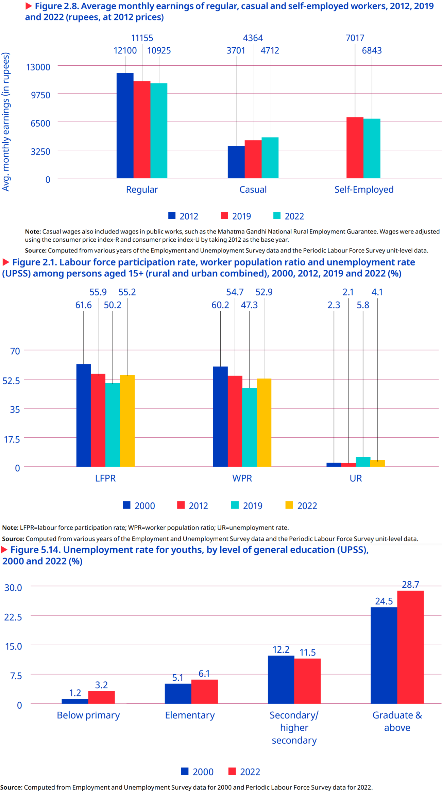
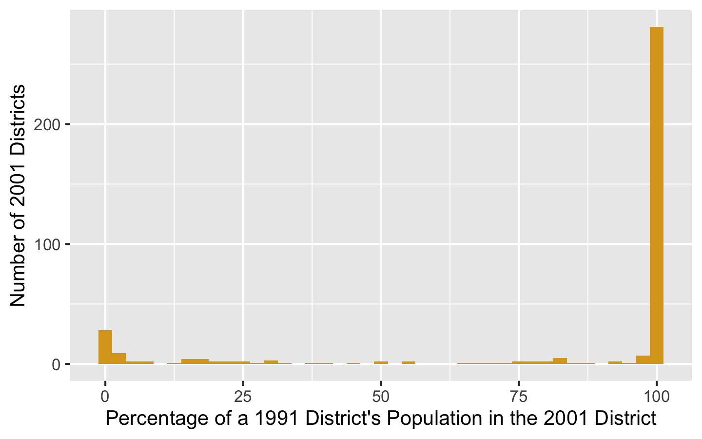

| variable | min | q1 | median | q3 | max | mean | sd | n |
|---|---|---|---|---|---|---|---|---|
| state_std | 1.000 | 9.000 | 18.000 | 24.000 | 35.000 | 17.400 | 9.335 | 588 |
| district_std | 1.000 | 5.000 | 12.000 | 21.000 | 70.000 | 15.361 | 13.570 | 588 |
| emie_2007 | 0.000 | 0.543 | 2.172 | 6.343 | 31.626 | 5.097 | 6.862 | 588 |
| n_2007 | 35.000 | 376.000 | 508.000 | 738.250 | 3021.000 | 604.444 | 352.551 | 588 |
| consumption_2007 | 380.129 | 742.781 | 934.457 | 1191.698 | 4408.381 | 1036.152 | 442.671 | 588 |
| gini_consumption_2007 | 0.063 | 0.218 | 0.264 | 0.312 | 0.548 | 0.270 | 0.077 | 588 |
| pct_urban | 0.000 | 8.307 | 16.202 | 29.085 | 100.000 | 21.630 | 18.857 | 588 |
| avg_hh_size | 3.836 | 5.026 | 5.504 | 6.127 | 8.778 | 5.570 | 0.834 | 588 |
| dependency_ratio | 39.124 | 81.786 | 97.228 | 119.799 | 206.353 | 101.596 | 26.886 | 588 |
| pct_fem_head | 5.893 | 10.495 | 11.490 | 12.708 | 24.559 | 11.705 | 1.969 | 588 |
| pct_hindu | 0.000 | 72.534 | 88.015 | 94.958 | 100.000 | 77.328 | 26.975 | 588 |
| pct_muslim | 0.000 | 1.498 | 6.238 | 13.877 | 100.000 | 11.021 | 15.904 | 588 |
| pct_other_religion | 0.000 | 0.000 | 0.957 | 6.342 | 100.000 | 11.651 | 25.606 | 588 |
| pct_st | 0.000 | 0.030 | 3.049 | 19.236 | 100.000 | 16.885 | 27.767 | 588 |
| pct_sc | 0.000 | 8.762 | 17.361 | 24.835 | 63.040 | 17.429 | 11.069 | 588 |
| pct_obc | 0.000 | 15.569 | 41.981 | 58.998 | 95.235 | 38.675 | 24.338 | 588 |
| pct_small_land | 2.664 | 32.096 | 45.251 | 59.522 | 96.165 | 46.213 | 18.390 | 588 |
| pct_medium_land | 0.000 | 19.115 | 31.508 | 43.699 | 95.276 | 32.502 | 17.731 | 588 |
| pct_large_land | 0.000 | 0.000 | 1.436 | 5.500 | 41.373 | 3.866 | 5.689 | 588 |
| pct_head_illiterate | 0.000 | 22.782 | 33.447 | 45.222 | 78.503 | 33.798 | 15.617 | 588 |
| pct_head_lit_to_primary | 3.231 | 19.754 | 26.520 | 34.296 | 77.631 | 28.066 | 11.387 | 588 |
| pct_head_secondary_plus | 0.582 | 27.143 | 35.877 | 47.030 | 81.487 | 38.087 | 14.751 | 588 |
| head_secondary_plus_2007 | 0.582 | 27.143 | 35.877 | 47.030 | 81.487 | 38.087 | 14.751 | 588 |
| region | 1.000 | 1.000 | 2.000 | 3.000 | 6.000 | 2.323 | 1.377 | 588 |
| pucca_share_2007 | 0.000 | 28.728 | 56.013 | 80.744 | 100.000 | 54.549 | 29.269 | 588 |
| consumption_2017 | 771.501 | 1536.832 | 2036.445 | 2601.629 | 11031.456 | 2237.366 | 991.941 | 578 |
| n_2017 | 7.000 | 96.000 | 128.000 | 192.000 | 1101.000 | 177.837 | 132.108 | 578 |
| wavg_ling_degrees | 0.000 | 0.049 | 1.623 | 4.070 | 5.000 | 2.071 | 1.952 | 587 |
| n | 3.000 | 3.000 | 3.000 | 3.000 | 3.000 | 3.000 | 0.000 | 587 |
| consumption_growth_pct | -51.504 | 78.295 | 115.600 | 153.758 | 738.440 | 125.613 | 76.100 | 578 |
| log_consumption_difference | -0.724 | 0.578 | 0.768 | 0.931 | 2.126 | 0.766 | 0.305 | 578 |
Escaping Inequality in India: Role of English-Medium Instruction
Abstract
English-medium instruction (EMI), or the teaching of school subjects in English, is often viewed as a potential tool for economic mobility in India, where English skills command substantial wage premia. Yet it remains unclear whether greater exposure to EMI generates broader local development gains. We study whether district-level EMI exposure in 2007, measured as the share of school-going children enrolled in EMI, affected growth in average household consumption between 2007 and 2018. To address endogeneity, we instrument EMI exposure using a proxy for the opporunity cost of acquiring EMI over Hindi-based schooling: the population-weighted average linguistic distance of districts’ mother tongues from Hindi in 2001. District-level 2SLS estimates with state-clustered standard errors are positive but insignificant, providing limited evidence that EMI exposure increased local consumption growth over the medium run. This district-level equilibrium analysis is supplemented with an individual-level probit model of selection into education. We conclude by discussing threats to identification and interpretation (namely spatial autocorrelation and migration) and their implications for future work.
Introduction and Literature Review
The Indian economy presents a series of paradoxes. The same economy whose GDP has grown at 6% annually on average for decades (International Labour Organization 2024, 2) has also seen stagnation if not losses in wages, employment, and labor force participation (see Figure 1), all while higher education has continued to develop an extremely strong, positive correlation with higher youth unemployment.1 And though the International Labour Organization (ILO) traces this back to a labor supply which lacks the skills needed to fill available job openings (p. 174), high unemployment rates can be found for skilled laborers of all backgrounds, including those who received vocational education and training (Agrawal and Agrawal 2017).

Appreciating this broader view helps reveal the degree to which unemployment, underemployment, and “jobless growth” (Graddol 2010) have, alongside wealth inequality, combined to undermine the degree to which many benefit from India’s recent economic growth (Bharti et al. 2024). From here we adopt a bottom-up perspective—what can members of this “many” do to improve their lives in such a context?—and in doing so, our motivating question reveals itself to be two-fold: 1) If I am a household, what can I do to best ensure my children’s future success in this context? And 2) if I am a local policy-maker, what can I do to best ensure my constituents’ future welfare in this context?
The history of economics highlights education as one rich answer to these questions (Mincer 1974; Card 1999; Björklund and Kjellström 2002; Bhandari and Bordoloi 2006). The history of India, however, highlights another: English. In its capacity as global lingua franca (Melitz 2016), English is perceived as expanding mobility (Itani et al. 2015) and opening pathways to education at prestigious universities and jobs at wealthy multinational corporations across the world (Ramanathan 2014), particularly in the US (Bedi 2019, 32–33). But combine this with its role as domestic lingua franca (Clingingsmith 2014), and we see the number of intranational pathways English opens up as well: the mass off-shoring of millions of service jobs in the 1990s and the rise of information technology (IT) since have not only driven a rapid rise in India’s GDP, but also a flurry of jobs whose higher socioeconomic returns (Chamarbagwala and Sharma 2011; Smokotin et al. 2014) are in large part only accessible to those who speak English (Mankiw and Swagel 2006; Shastry 2012).
Empirical study reveals the combined effect of these mechanisms. Using nationally-representative, household-level panel data, Azam et al. (2013) find that English fluency was, at least up until 2005, associated with a 34% hourly wage premium for men and a 22% premium for women; even for men and women with little English proficiency, the premia were still 13% and 10%. Refeque and Azad (2022) would later replicate this finding and extend it out to 2011-12. The strongest evidence for a causal effect of English skills on wages, however, comes from Chakraborty and Bakshi (2016), for whom West Bengal’s 1983-2004 ban on English teaching in public primary schools constituted a natural experiment whose treatment group (those with increased “exposure” to the ban) faced a 26% decrease in future weekly wages relative to the control group (those less “exposed” to the ban)2.
It is thus by combining our two answers—education and English—that we can begin to understand the demand for English-medium instruction (EMI), or for the teaching of all school subjects in English, currently seen in India (Gooptu and Mukherjee 2023; Lahoti and Mukhopadhyay 2019; Chattopadhay and Roy 2017). “Language skills are human capital,” after all (Chiswick and Miller 1995, 4), and “English-language skills [specifically] are a form of human capital” (Azam et al. 2013, 344); if the main mechanism by which education affects wages is human capital, then synthesizing education with English like this seems natural. Perhaps this is why EMI, as both a tool for social development (National Knowledge Commission 2009) and even as a tool for individual liberation,3 is so often seen as a source of hope.
But the truth of EMI remains unclear and understudied. On one hand, there are limitations unique to EMI: instruction in one’s mother tongue is associated with better academic participation and outcomes, both within India (Mohanty 2022; Nair 2015) and beyond (Bühmann and Trudell 2008), particularly when schooling quality and parents’ socioeconomic status are controlled for.4
On the other hand, there are limitations unique to the many flaws of the Indian education system: low-effort (Singh 2013), even abusive (Centre for Budget and Policy Studies 2020, 218–22) teachers whose annual absenteeism rates have remained near 25% for decades (Muralidharan et al. 2017; Chaudhury et al. 2006, who also find that only 45% of teachers at any one point in time were engaged in any kind of teaching-related activity)5 coupled with inefficient resource allocation (Muralidharan and Sundararaman 2013; Gooptu and Mukherjee 2023) and poor commuting infrastructure (Kremer et al. 2005), all alongside schools which actively lie about their medium of instruction (Mathew and Srivastava 2011; Lahoti and Mukhopadhyay 2019), all of which is more commonly found in government schools than private. And yet the mismatch between expectation and reality can be so great that, even among the rural private schools surveyed by Lahoti and Mukhopadhyay (2019), “more than half (57%) of the children who [were] supposed to be [in EMI were] actually studying in the dominant regional language” (p. 55). Navigating such an environment requires parents to have enough information and social capital with which to identify higher-quality schooling/tutoring6—often the product of being well-educated themselves (Lahoti and Mukhopadhyay 2019; Blimpo et al. 2015)—but also to have a high enough income to afford this higher-quality7 education (Muralidharan and Kremer 2008; Singh 2013).
The demand for both higher-quality education in general and EMI in particular has, since at least the 2000s, been increasingly met by a supply of ‘low-cost’8 private schools (James and Woodhead 2014; Srivastava 2013; Ramanathan 2016; Chattopadhay and Roy 2017).9 Such schools lack the reputation typically afforded to higher-end private schools, meaning their students lack the social capital of other private school students (Ramanathan 2016). Conversely, more disadvantaged students are priced out of all schools except the free (if not negatively priced, see Muralidharan 2019) government schools. Note that these schools are not only associated with a lower quality of education (Muralidharan and Kremer 2008; Srivastava 2013; Muralidharan and Sundararaman 2015; Raju 2023), they are also associated with the most obvious signals of education quality, visible even to low-information parents, being worse-off e.g., worse facilities (Srivastava 2013; Central Square Foundation 2020, 54). Here we have evidence that school search ends with an inequality-amplifying positive assortative matching (Muralidharan 2019). Yet even amongst this new ‘middle class’ of schools, issues with EMI persist: the survey of Lahoti and Mukhopadhyay (2019) and the ethnographic study of Bhattacharya (2013) find children in low-cost private schools failing to learn both English as well as the subjects taught in it, further corroboration of the findings of Bühmann and Trudell (2008), Nair (2015), and Mohanty (2022). The reasons for this are likely two-fold: compared to parents who enroll their children in high-end private schools, those who select into low-cost private schools are typically 1) lacking in information and social capital, thus “[making] misguided evaluations of school quality based on visible factors” (Muralidharan and Sundararaman 2015, 1061–62); and 2) do not provide their children with as much community and out-of-classroom support for English (particularly when compared to “elite families” who often use English as a second language even within the family (Gupta 1997, 54–55)), preventing their oral skills from developing to the point where they can engage in class beyond rote memorization of the teacher’s answers (Bhattacharya 2013; Treffers-Daller et al. 2022), to the extent such engagement is allowed (Brinkmann 2015).10
Given all these mediators, nuances, and negations of its perceived effect, can EMI truly be seen as a source of hope? Should households turn to it to invest in their children’s future? Does greater enrollment in EMI aid future development? Should policy-makers be promoting it as a tool for local development? To gain insight into these questions, we seek to answer the following one:First, note the improvements made here over the previous literature. The setting of 2007-2018 may be more relevant today than the settings of similar literature, all of which are closer to the advent of service job offshoring in the 1990s (e.g., Refeque and Azad 2022). Additionally, note that our response variable here is consumption, not wages. India holds a vast number of informal and self-employed individuals, meaning its labor force varies wildly in the degree to which wages reflect material well-being.11
Second, we must highlight that unlike much of this literature, we lack household panel data. We will thus follow previous papers (e.g., Martin et al. 2017) and aggregate data at the district level.12 More specifically, we will take cross-sectional data from 2007-08 (National Sample Survey Office 2011) and 2017-18 (National Sample Survey Office 2022), aggregate each at the district level separately, and match districts across the time periods to construct a district pseudo-panel. District-level variables are developed in Section 4.1 and the district matching method is explained in Section 5.2 .
Our empirical methodology will then proceed in two parts. In Section 3, we study the composition of our key “EMI exposure” measure by estimating an individual-level probit of school participation in 2007-08. In Section 4, we move to the district level and implement two-stage least squares (2SLS): the weighted average of linguistic distance from Hindi in 2001 will be used to instrument for EMI exposure, onto whose fitted values we regress the growth rate of average consumption.13 The choice of instrument is discussed in Section 4.2.
Our 2SLS results will, at best, reflect the medium-run local general equilibrium effects of EMI exposure. On one hand, by aggregating away all individual or household-level variation, the ecological fallacy renders our 2SLS estimates uninterpretable at these lower levels. Additionally, school-going children in 2007-08 will still be quite young in 2017-18, and many may still be in school (particularly in more developed districts).14
With our current methodology, we find that greater exposure to EMI enrollment has a statistically and economically insignificant effect on local consumption growth (Section 4.4), in line with previous literature on EMI and Indian education quality. Note, however, that our outcome includes households not directly exposed to EMI, meaning the effect we’re studying would likely be inherently small regardless. Migration and spatial spillovers may also attenuate our results; evidence which both challenges and supports this is discussed in detail in Section 5.2.2).
Data Sources
The sole 2001 variable, linguistic distance from Hindi, comes from the 2001 Census of India (Office of the Registrar General and Census Commissioner of India 2001).
Geospatial data intended for maps and spatial autocorrelation measures is sourced from Bhatia (2020), which is itself an adaptation of Meyers (2020). Final map figures are withheld until the geometry join is validated. Our methods for tracking districts across time (see Section 5.2.1) begin with data from India State Stories (2024) and Jaacks et al. (2020).
All variables reflecting 2017-18 data come from the 75th Round of the National Sample Survey (NSS), titled “Household Social Consumption: Education” (National Sample Survey Office 2022). All 2007-08 variables but one come from the 64th round of the NSS, on “Participation and Expenditure in Education” (National Sample Survey Office 2011); the sole exception to this is the percentage of homes which are pucca (i.e., permanent), which is instead sourced from a separate schedule of the 64th NSS, “Household Consumer Expenditure” (National Statistical Office 2011). Response rates in all of the surveys were above 96%.
Sample weights were applied wherever applicable. All district-level aggregates were formed as sample-weighted averages. The education participation probit of Section 3 used survey-weighted generalized linear models and design-based standard errors.15. Summary statistics for variables used in the probit are given in Table 2 and Table 3, whereas Table 1 contains summary statistics for variables used in the 2SLS estimation.
Except for certain individual-level variables in the education probit, we will be aggregating variables at the district level. As will be shown in Table 1, the average population of a district in either sample period (2007-08 and 2017-18) is 2 million. In the survey samples, however, most districts have between 400 and 1200 people represented in the data, with the exact number varying in line with a district’s population.
Data Issues: Representativeness and Quality
Despite the complicated methodology and rigor underlying each NSS round (see, e.g., Mahalanobis 1954), three key issues with NSS data still exist. We address them in increasing order of severity.
The first issue is the observation from Deolalikar and Dubey (2008) that “the NSS has sometimes changed its data collection methodology midstream, and this has affected the comparability of NSS estimates over time” (p. 410). The examples they and the Ministry of Statistics and Program Implementation (2024) mention predate all of our data, whereas the change described by the Ministry of Statistics and Program Implementation (2024) (that the base year for calculating national accounts has shifted from 2004-05 to 2011-12) should be mostly irrelevant for us. More relevant, however, is the politicization of the NSS documented by Bhattacharya (2023), which may affect our 2017-18 measures: Bhattacharya begins this period of NSS history by describing a major revision to GDP figures in 2014-15 which was generally misaligned with most other economic indicators. Making this even more suspicious, however, was the state’s unwillingness to reveal any information on the reasons or methodology behind this change. Revelations of ghost firms in the NSS database used to calculate the new GDP series, plus a leak of poor unemployment data in 2017-18 which was not officially released until after the Lok Sabha election in 2019, hurt the trustworthiness of our data; Subramanian (2019) ultimately finds that, driven by an improper use of value-added vs. volume metrics, informal activity proxies, and deflators within industries, the NSS Office had overestimated GDP growth rates by 2.5 percentage points.
More worrying is the observation by Lucas (2021b) that “the NSS is not representative at the district level” (p. 329). While Lucas does not provide a citation for this, it still may be true. Samrat (n.d.) writes about a conference on Oct. 9th, 2025 where the National Statistics Office had touted its ability to, among other things, provide district-level estimates; the language is unclear on whether this means district-level estimates will now be provided in NSS reports or that district-level estimates can now be meaningfully calculated from NSS data. Documentation from the National Sample Survey Organisation (2001) states that NSS sampling is built “in order to ensure proportionate representation or pre-fixed numbers of sample households from each group / stratum,” which we henceforth use synonymously (p. 15). Defining proportionate representation at the stratum level has been an NSS tradition since Mahalanobis (1954, 274–76), but the benefit of the NSS rounds that we use is that strata are now defined within sectors, or the rural and urban areas of each district (with multiple urban sectors if population density is high).
Consider National Sample Survey Office (2011), the source of most of our 2007-08 measures. Its sampling begins at the national level, where the total number of first-stage units (FSUs) is set, each FSU corresponding to a village or Panchayat ward in rural areas, or a block or a town/outgrowth (OG) in urban areas. These FSUs are then allocated in proportion to population in the following order: first, between the rural vs. urban sectors of the state, with a slight weight to urban; then to strata; then sub-stratum; and from there, FSUs are selected. In rural areas, selection was done using Probability Proportional to Size With Replacement (PPSWR), with the size being the population in the 2001 census. Simple Random Sampling Without Replacement (SRSWOR) was used for urban areas where FSUs were blocks, and PPSWR (with weights from the 2001 census) was used where FSUs were towns/OGs. The documentation for National Sample Survey Office (2022), the source of our 2017-18 measures, makes it clear that FSUs are allocated first to state, then to within-state region (a more recent addition), then to districts, strata, sub-strata, sub-rounds, sub-samples, and FOD sub-regions.
Even then, if each district gets rural and urban sectors, and if sample FSUs are selected from within each, it’s possible to make the claim that district-level estimates are representative; if samples within strict subsets of the district are representative, why should districts not be able to inherit that?
Where representativeness at the district-level could fall apart, however, is in FSU selection. Four FSUs are selected from each sub-stratum, so if a district has only one sub‐stratum, then only four FSUs may be selected in that district. Additionally, the use of PPSWR (with replacement) in rural strata or for town/OG FSUs means that the same FSU might theoretically be selected more than once (Brus 2023). The design may thus be sufficient for producing reliable state-level estimates, and perhaps even for major districts; but it may be weak for smaller districts with low sample sizes.
Finally we have the most difficult issue to address: general data quality issues. The response rate to NSS surveys systematically decreases in a household’s wealth and income, helping ensure endogeneity and bias behind what was reported and what was not (Ravi 2023). For surveys which use the 2011 census as their sampling frame (which includes our 2017-18 data), meanwhile, all of the rural, working age (15-29), and SC (Scheduled Caste) populations were found to have been overestimated significantly. Contrasting 2011-12 econometric values with nation-wide shares from the 2011 Census, Ravi et al. (2023) find that a sample size of 464,960 becomes a bias-adjusted sample size16 of 324, 240, or 536 given rural, SC, and working age overestimation respectively. This is a 99.9% reduction in statistical efficiency across the board (Ravi et al. 2023, 11).
The Composition of Education Participation
Model and Variables
We are interested in how consumption growth is affected by EMI exposure (EMIE), which akin to previous literature (Chakraborty and Bakshi 2016) we define like so: \[\text{EMIE}_d = 100\times\frac{\text{Num. children enrolled in EMI}}{\text{Num. children enrolled in school}}\,\,\, \text{in district }d\] This measure is effectively a district-level reflection of an intensive margin. To complement our understanding of EMIE in later sections, we would like to understand the extensive margin—enrollment into school—and the variables which affect the probability that any one child \(i\) (aged 5-19) appears in our EMIE measure. We thus estimate the following probit model: \[\begin{align} \Pr\bigl(\mathrm{Enrolled}_i = 1 \mid X_i,\,Z_{d(i)}\bigr) = \Phi\Bigl( \beta_0 &+ \beta_1\,\mathrm{Age}_i + \beta_2\,\mathrm{Female}_i + \beta_3\,\mathrm{HH Size}_i + \beta_4\,\mathrm{Urban}_i \notag\\[-0.0em] & + \sum_{r\in R}\gamma_r\,\mathrm{Religion}_{ir} + \sum_{s\in S}\delta_s\,\mathrm{Social Group}_{is} + \sum_{d\in D}\theta_d\,\mathrm{SchoolDist}_{id} \notag\\[-0.0em] & + \sum_{f\in F}\psi_f,\mathrm{FatherEduc}_{if} + \sum_{u\in U}\eta_u\,\overline{u}_{d(i)} + \phi\,\overline{\mathrm{EnrollmentCost}}_{d(i)} \Bigr) \end{align}\]
where \[ \begin{aligned} R &= \{\text{Muslim, Christian, Sikh, Jain, Buddhist, Zoroastrian, None}\},\\ S &= \{\text{Scheduled Tribe, Scheduled Caste, OBC}\},\\ D &= \{\text{1–2km, 2–3km, 3–5km, $\ge5$km}\},\\ F &= \{\text{Illiterate; Literate, no school; Literate, school < primary;}\,\\ &\quad\;\;\;\text{Primary, Upper primary, Secondary, Higher secondary, Postsecondary+}\},\\ U &= \{\text{Educ.\ free available},\,\text{Tuition waived},\,\text{Scholarship/Stipend},\,\\ &\quad\;\;\;\text{Textbooks received},\,\text{Stationery received},\,\text{Mid-day meal, etc.}\} \end{aligned} \]
and \[\begin{align*} \overline{u}_{d(i)} &= \text{Average value of } u \in U \text{ in district } d \text{ amongst enrolled children, }\\ \overline{\mathrm{Enrollment Cost}}_{d(i)} &= \text{Average value of } \mathrm{EnrollmentCost} \text{ in } d \text{ amongst enrolled children.} \end{align*}\]
There are two kinds of regressors here: those in \(X_i\), the variables unique to child \(i\), and \(Z_{d(i)} = \{\overline{u}_{d(i)}:u\in U\} \cup\{\overline{\mathrm{EnrollmentCost}}_{d(i)}\},\) the variables which have been aggregated at the level of the district \(d(i)\) where child \(i\) lives. Without this aggregation, neither \(u\) nor \(\mathrm{EnrollmentCost}\), both endogenous to enrollment, would be well-defined for children not in school. Our aggregation can thus be understood as a way of handling missingness; whereas \(\mathrm{EnrollmentCost}_i\) was missing for 120,062 children (as reflected in Table 2), \(\overline{\mathrm{EnrollmentCost}}_{d(i)}\) was missing for 7,109. Observations still missing a relevant variable were then dropped.17
The district-level averages can be interpreted as reflections of local supply-side factors, namely the general availability or generosity of educational inputs in a child’s local environment. Their marginal effects (see Table 4) may reflect how changes in these district-level characteristics affect the probability a child enrolls in education—or in other words, the elasticity of enrollment with respect to local schooling conditions.18
Following Azam et al. (2013), Munshi and Rosenzweig (2006), and Singh (2013), we use father’s education to proxy a child’s ability before schooling. We use the father despite evidence indicating that the mother’s education is more strongly associated with early life human capital development.19 Taking the average of the mother’s and father’s education is not possible as education level is recorded by the National Sample Survey Office (2011) as a categorical variable. Future work may attempt to create an index variable for this.
The National Sample Survey Office (2011) do not explicitly identify parent-child relationships. Instead, they only provide each person’s relationship to the head of their household. Father’s education is thus proxied by the education of the head of the household if they are male (average age here is 14); else as the married child of the head if they are male (married men often live with their elderly parents; average age of 18.1); else as the parent/parent-in-law of the head if they are male (average age of 13.5). We do not include male spouses of the head, whose average age is 11.8 and share of children (aged <18) is 0.896 in our data.20
Summary statistics for numeric variables are given in Table 2, and for categorical variables in Table 3.
| variable | min | q1 | median | q3 | max | mean | sd | n |
|---|---|---|---|---|---|---|---|---|
| AGE | 5 | 8 | 12.0 | 16.000 | 19.00 | 11.891 | 4.218 | 127207 |
| HH_SIZE | 1 | 4 | 5.0 | 7.000 | 30.00 | 5.914 | 2.397 | 127207 |
| DIST_FROM_NEAREST_PRIMARY_CLASS | 1 | 1 | 1.0 | 1.000 | 5.00 | 1.160 | 0.552 | 126895 |
| DIST_FROM_UPPER_PRIMARY_CLASS | 1 | 2 | 2.0 | 2.000 | 5.00 | 2.103 | 0.856 | 126877 |
| DIST_FROM_SEC_CLASS | 1 | 2 | 4.0 | 4.000 | 5.00 | 3.245 | 1.242 | 126841 |
| IS_EDU_FREE | 1 | 1 | 1.0 | 2.000 | 2.00 | 1.379 | 0.485 | 89802 |
| RECD_TXT_BOOKS | 1 | 1 | 6.0 | 6.000 | 6.00 | 3.637 | 2.420 | 89725 |
| TOTAL | 1 | 2500 | 3500.0 | 5000.000 | 80000.00 | 4252.437 | 2890.709 | 127202 |
| weight | 6 | 1100 | 2397.5 | 3524.835 | 79599.75 | 2499.363 | 1820.506 | 127207 |
| enrolled | 0 | 0 | 1.0 | 1.000 | 1.00 | 0.706 | 0.456 | 127207 |
| variable | category | n | share |
|---|---|---|---|
| SEX | Female | 67990 | 0.534 |
| SEX | Male | 59217 | 0.466 |
| RELIGION | Hindu | 95598 | 0.751 |
| RELIGION | Muslim | 19072 | 0.150 |
| RELIGION | Jain | 7608 | 0.060 |
| RELIGION | Christian | 2274 | 0.018 |
| RELIGION | Buddhist | 1398 | 0.011 |
| RELIGION | Sikh | 959 | 0.007 |
| RELIGION | Zoroastrian | 295 | 0.002 |
| RELIGION | Other | 3 | 0.000 |
| SOCIAL_GROUP | Other Backward Class | 50189 | 0.394 |
| SOCIAL_GROUP | Other | 35383 | 0.278 |
| SOCIAL_GROUP | Scheduled Caste | 23627 | 0.186 |
| SOCIAL_GROUP | Scheduled Tribe | 18008 | 0.142 |
| RELATION_TO_HEAD | 2 | 102946 | 0.809 |
| RELATION_TO_HEAD | 6 | 16323 | 0.128 |
| RELATION_TO_HEAD | 8 | 3789 | 0.030 |
| RELATION_TO_HEAD | 5 | 1735 | 0.014 |
| RELATION_TO_HEAD | 1 | 923 | 0.007 |
| RELATION_TO_HEAD | 3 | 679 | 0.005 |
| RELATION_TO_HEAD | 4 | 508 | 0.004 |
| RELATION_TO_HEAD | 9 | 244 | 0.002 |
| RELATION_TO_HEAD | 7 | 60 | 0.000 |
| SECTOR | Rural | 85891 | 0.675 |
| SECTOR | Urban | 41316 | 0.325 |
Results and Discussion
Average marginal effects for numeric variables and counterfactual comparisons (relative to the reference level) for categorical variables (both referred to as AME henceforth) are reported in Table 4, which has been derived using the work of Arel-Bundock et al. (2024) In line with advice from Nowosad and Tennekes (2021), we report the AME instead of marginal effects at the mean.
| term | estimate | std.error | statistic | p.value | conf.low | conf.high | method | status | reason |
|---|---|---|---|---|---|---|---|---|---|
| AGE | -0.028 | NA | NA | 0.000 | NA | NA | analytic_probit_ame | estimated | NA |
| SEXFemale | 0.039 | NA | NA | 0.000 | NA | NA | analytic_probit_ame | estimated | NA |
| HH_SIZE | -0.008 | NA | NA | 0.000 | NA | NA | analytic_probit_ame | estimated | NA |
| RELIGIONMuslim | -0.167 | NA | NA | 0.000 | NA | NA | analytic_probit_ame | estimated | NA |
| RELIGIONChristian | -0.010 | NA | NA | 0.275 | NA | NA | analytic_probit_ame | estimated | NA |
| RELIGIONSikh | 0.067 | NA | NA | 0.000 | NA | NA | analytic_probit_ame | estimated | NA |
| RELIGIONJain | 0.082 | NA | NA | 0.000 | NA | NA | analytic_probit_ame | estimated | NA |
| RELIGIONBuddhist | 0.063 | NA | NA | 0.000 | NA | NA | analytic_probit_ame | estimated | NA |
| RELIGIONZoroastrian | 0.144 | NA | NA | 0.000 | NA | NA | analytic_probit_ame | estimated | NA |
| RELIGIONOther | 0.278 | NA | NA | 0.725 | NA | NA | analytic_probit_ame | estimated | NA |
| SOCIAL_GROUPScheduled Caste | -0.001 | NA | NA | 0.892 | NA | NA | analytic_probit_ame | estimated | NA |
| SOCIAL_GROUPOther Backward Class | 0.067 | NA | NA | 0.000 | NA | NA | analytic_probit_ame | estimated | NA |
| SOCIAL_GROUPOther | 0.141 | NA | NA | 0.000 | NA | NA | analytic_probit_ame | estimated | NA |
| SECTORUrban | 0.077 | NA | NA | 0.000 | NA | NA | analytic_probit_ame | estimated | NA |
| DIST_FROM_NEAREST_PRIMARY_CLASS2 | -0.010 | NA | NA | 0.371 | NA | NA | analytic_probit_ame | estimated | NA |
| DIST_FROM_NEAREST_PRIMARY_CLASS3 | 0.014 | NA | NA | 0.004 | NA | NA | analytic_probit_ame | estimated | NA |
| DIST_FROM_NEAREST_PRIMARY_CLASS4 | -0.077 | NA | NA | 0.027 | NA | NA | analytic_probit_ame | estimated | NA |
| DIST_FROM_NEAREST_PRIMARY_CLASS5 | 0.025 | NA | NA | 0.325 | NA | NA | analytic_probit_ame | estimated | NA |
| dmean_num_IS_EDU_FREE | NA | NA | NA | NA | NA | NA | analytic_probit_ame | estimated | NA |
| dmean_num_RECD_TXT_BOOKS | -0.028 | NA | NA | 0.000 | NA | NA | analytic_probit_ame | estimated | NA |
Table 4 has been calculated over all observations, with standard errors clustered at the rural village and urban block level (no district clustering) derived using the delta method and automatic differentiation.21 All reported values are probabilities: that \(\mathrm{AME}_{\text{Age}} =\) -0.028 in the table below thus means that, on average, a one-year increase in age is associated with a 2.767 percentage point decrease in the probability of being enrolled by, holding all else constant (Hansen 2022). The counterfactual comparison \(\mathrm{AME}_{\text{Muslim}} =\) -0.167, meanwhile, where ‘Hindu’ is the reference category to ‘Muslim’, means that the average change in the probability of a Hindu child being enrolled if they were hypothetically made Muslim is -0.167, keeping all else fixed at observed values.22
The goal of this paper is to study how well household optimization (through education participation and EMI enrollment) and local policy changes (aimed at shifting education supply or EMI enrollment) can lead to upward mobility given the context they exist in: one of inequality and jobless growth. In our results we do indeed find supply and social structure to be meaningful predictors of how households optimize via education enrollment.
We first look at household-level determinants of who gets to stay in school. Our data is of children aged 5-19, so as a 5-18 year old child grows one year older, the probability they stay enrolled in school decreases by -2.767 percentage points on average, indicative of either economic necessity, the opportunity cost of school, or even disillusionment with school quality growing in age.23 We also see that each additional household member lowers enrollment probability by -0.822 percent. A negative value is expected—household resources should dilute as size increases—but the slight value and high significance are notable given the quantity-quality tradeoff of e.g., Becker (1969), plus empirical tests of it in India. Kumar and Kugler (2011) find that, by using children’s educational attainment as a proxy for quality, cross-sectional dataset from 2007-08 indicates the tradeoff is heterogeneous in India, stronger given rural areas, low-caste children, illiterate mothers, and poor children. Conversely, by instrumenting family size Onur and Velamuri (2021) remove the quantity-quality tradeoff entirely from their panel data, whether quality is proxied by educational expenditures on a child or test scores. Enrollment is such a relatively low-cost, extensive-margin measure for quality, however, that it makes sense that neither the heterogeneity nor non-existence of these previous studies shows up here. The significance of our coefficient is understandable given the many correlates of fertility and schooling amongst our regressors, whereas the small magnitude of our estimate may arise from a non-linearity in enrollment (e.g., if household size only begins to constrain at a high enough level), from economies of scale in enrollment costs, and from the aforementioned low quality threshold that is enrollment. This last factor also colors our interpretation of the relatively high probability of female enrollment (3.929 percent more than male enrollment): while it likely reflects the success of programs such as the Sarva Shiksha Abhiyan and the Kasturba Gandhi Balika Vidyalayas girls’ schools (Press Information Bureau 2008), it also tells us nothing about the quality of education beyond enrollment.
While both Muslims and Christians are less likely to be enrolled than Hindus (whereas Buddhists and Zoroastrians are more likely), the sharp Muslim penalty of -16.71 percent echoes Borooah and Sabharwal (2021), who find that even upper-class Muslims enroll at lower rates. Even greater statistical significance can be found among Scheduled Tribe, Scheduled Caste, and Other Backward Class members, all of whom have negative coefficients, with Scheduled Tribes faring the worst at -0.07 percent. While we should be suspicious of causal interpretations, it is likely these coefficients reflect the way structural factors i.e., those which cannot be changed through individual actions alone, constrain the choice set over which households optimize over. For example, if we use chronic teacher absenteeism to reflect school quality, then we can use Kremer et al. (2005) to see that better infrastructure and proximity to a paved road correlate with increased school quality, as does more frequent school monitoring per both Kremer et al. and Muralidharan et al. (2017). If we assume that the physical and political infrastructure needed to do this is decreasing in the share of ST/SC/OBC members in the area, then this only decreases the opportunity cost of labor for children in these groups.
Looking deeper into the supply side of education, it seems that all variation which could potentially be explained by enrollment cost has, at best, been consumed by other variables, implying direct costs matter less than social barriers and other correlates of supply-side factors. While one would expect the causal effect of an exogenous shock in scholarships/stipends, stationery, or textbooks to match the sign of their positive coefficient estimates, only textbooks show up as statistically significant. The district-level share of students who attend a school which charges no tuition fees (i.e., where ‘Educ. freely available’) is collinear with the intercept in the active probit specification, so we do not report its AME in this draft. National Sample Survey Office (2011) documentation indicates that such schools include most if not all government schools, as well as private schools in some states up to a certain level of education. Building off observations in Section 1 that government schools tend to have worse facilities, chronic teacher absenteeism, and so on, this omitted coefficient remains a useful warning about the difficulty of separating direct costs from the quality and availability of public schooling. Comparing the remaining variables’ \(s\)-values24 using Mansournia et al. (2022) shows that ‘Textbook(s) received’ has an \(s\)-value of 16.8, meaning that the data provided 16.8 bits of information against the null hypothesis (a coefficient of zero).
Finally we have the most economically and statistically significant terms: the father’s (or father proxy’s) education level. We can interpret this in multiple ways: as a proxy for financial ability (via the relationship between a father’s education and the household’s permanent income), for heritable cognitive ability, for a child’s valuation of education (via intergenerational transmission of tastes and values), and even for access to educational and labor market information (via social capital). It’s possible that these variables, insofar as they correlate with fertility and schooling choices, absorbed some of the variation which otherwise would’ve been explained by, say, household size. But the size and significance of these coefficients may imply something further: that a household’s financial/cognitive ability, tastes/preferences, and social capital/information networks affect both household optimization and the choice set available for them to optimize over.
The Effect of EMIE: 2SLS Estimation and Main Results
Model and Variables
Inspired by the measures of public school exposure in Chakraborty and Bakshi (2016), we construct our primary explanatory variable, EMI exposure (EMIE) in district \(d\), like so: \[\text{EMIE}_d = 100\times\frac{\text{Num. children enrolled in EMI}}{\text{Num. children enrolled in school}}\,\,\, \text{in district }d.\]
We are interested in how changes in this intensive margin,25 affects changes in \(\%\Delta\mathrm{Consumption}_d\),26 the growth rate of average household consumption expenditures from 2007-08 to 2017-18. To ensure an exogenous error term, we will be using \(\mathrm{LingDistance}_d\) as an instrument for \(\mathrm{EMIE}_d\) (see Section 4.2 for more information). To identify this effect, two-stage least squares (2SLS) estimation will be performed on the following model: \[ \begin{aligned} \mathrm{EMIE}_d &= \gamma_0 + \gamma_1\,\mathrm{LingDistance}_d + \sum_{k=1}^{K}\gamma_{k+1}\,X_{kd} \\ \%\Delta\mathrm{Consumption}_d &= \beta_0 + \beta_1\,\widehat{\mathrm{EMIE}}_d + \sum_{k=1}^{K}\beta_{k+1}\,X_{kd}. \end{aligned} \tag{1}\] Summary statistics for all of the variables in this model, including the controls \(k\) in the vector \(X_{kd}\), are provided in Table 1. Final map figures are withheld until the missing geometry join discussed in Section 5.2 is validated; that join is currently blocked by a data harmonization method which performed many-to-many matching from 2001 to 2007-08 to 2017-18 to 2019-20, the years our shapefiles data was collected (Bhatia 2020). Issues of and improvements to this method are also discussed in Section 5.2.
Important
Final district map figures are withheld until the district panel joins to validated geometry for at least 75% of district-panel rows. This prevents diagnostic distribution plots from being presented as geographic maps.
Instrumental Variable
Our instrument for \(\mathrm{EMIE}_d\) is \(\mathrm{LingDistance}_d\), the average linguistic distance from Hindi of the three most spoken mother tongues in district \(d\) in 2001, weighted by the number of speakers then. The mechanism behind this may seem odd: why choose linguistic distance from Hindi as opposed to, say, English? India’s large linguistic diversity27 predisposes it to have large communication costs, large coordination costs, and thus hindered economic development within its borders (Nakagawa and Sugasawa 2021). To decrease such frictions in the market and in public goods provisioning (Liu and Pizzi 2016), both Hindi and English have been thrust into the roles of competing domestic lingua franca (Clingingsmith 2014), meaning Hindi- and English-medium schools can be found across the country (Shastry 2012, 294).
As the ‘distance’ between one’s mother tongue and Hindi increases, we expect the opportunity cost of learning English over Hindi to decrease. Because of this, we also expect individuals with a mother tongue further from Hindi to be more likely to enroll in EMI. “That distance from Hindi induces people to learn English” and even “schools to teach English” is in fact precisely what Shastry (2012, 289) claims. If we can then show that local linguistic distance induces exogenous variation in local EMI, we can wield it as an instrumental variable (IV) to isolate \(\text{EMIE}_d\)’s effect on consumption growth. Shastry helps us once more here, evidencing both the relevance (pp. 299-301) and exclusion restriction (pp. 302-305) of \(\mathrm{LingDistance}_d\)’s effect on \(\text{EMIE}_d\).
We are currently unable to replicate her justification of the exclusion restriction, however. Her argument centers on a map depicting the geographical balance of her residual variation, made possible despite regional linguistic divides thanks to state fixed effects. In our case, adding state FEs explodes the condition number of our design matrix to \(\kappa =\) 27245.18 despite all individual collinearity measures remaining low (every scaled generalized variance inflation factor (GVIF) was below 6.05), with similar results for region FEs to a lesser degree. This almost certainly results from the many-to-many matching used in this paper’s district tracking algorithms.28 Our plan to repair it moving forward is discussed in Section 5.2.1.
A portion of this near-perfect multicollinearity may simply just be “God’s will” (Blanchard 1987, 449): the States Reorganization Act of 1956, for example, aligned state lines with linguistic lines, a precedent which new states have followed since (Sarma 2025). This possiblity is precisely the motivation for our planned first-difference 2SLS design (Angrist and Pischke 2008, 167). Even if only the data harmonization changes from Section 5.2.1 are made, future work will still demean each district’s linguistic distance by subtracting away its state’s linguistic distance.29
In the meantime, we rely on heuristic justifications of our instrument. Its relevance is plausible: districts with higher linguistic distance from Hindi should have higher EMI demand due to the relatively lower opportunity cost of learning English. They should also have relatively lower cross-language coordination costs for setting up EMI as opposed to Hindi-medium instruction, allowing EMI supply to rise more. Shastry justifies this at the state level; future work must replicate this at the district level.
The exclusion restriction, meanwhile, requires us to assume that after conditioning on our controls, a district’s linguistic distance is a) predetermined and b) plausibly orthogonal to all later shocks and trends in consumption except via education. We could demonstrate (b) by replicating Shastry’s visualization of geographically balanced residuals, though this will require state/region fixed effects (and possibly spatial correlation robust SEs; see Section 5.2.2). More work will be needed to replicate her justification of (a): not only does she show that district-level linguistic distance in both 1991 and 1961 are strongly correlated, she also shows that they both increase the within-state share of a language’s native speakers who learn English in 2001, as well as the in-state level of EMI supply in 2001. That linguistic distance remains consistent over decades implies little inter-district migration, in line with most literature in Section 5.2.2.30 Our exclusion restriction may still fail, however, if districts further from Hindi benefit differently from pre-existing human capital, access to non-Hindi media, trade relations, NGO/government funding, and so on compared to districts closer to Hindi. Further work will be needed to address this.
\(\mathrm{LingDistance}_d\) is defined as the population-weighted average of Shastry’s simplest and most frequently-used measure: a 0-5 integer scale reflecting the “degrees” of separation between one’s mother tongue and Hindi, made in collaboration with Harvard linguist Jay Jasanoff.31 She provides this measure for 14 Indo-European languages. To ensure we only consider such languages, we only take the weighted average of the top three spoken languages in each district. This cutoff is otherwise arbitrary and recent data from Anderson et al. (2025) may let us supplement this with a cognate-based measure under which Shastry’s results are also robust. Additionally, even though “the complexity of languages” had, until recently, rendered “the quest among linguists for a scalar measure of linguistic distance… in vain” (Chiswick and Miller 2005, 3), it may be possible to construct our own measure of linguistic distance using the perplexity of corpus-based \(n\)-gram models (Gamallo et al. 2017) via the many lengthy corpora provided by Choudhary (2021).
Results
The results of our first-stage regression, of EMI exposure on linguistic distance, are provided in Table 5. The results of the second-stage regression, where consumption growth is regressed onto the fitted values of EMI exposure, are provided in Table 6. All standard errors in both stages are clustered at the state level.
| model | term | estimate | std.error | statistic | p.value | partial_f | partial_p | status | reason |
|---|---|---|---|---|---|---|---|---|---|
| baseline | (Intercept) | 15.362 | 4.070 | 3.775 | 0.000 | 53.359 | 0 | estimated | NA |
| baseline | wavg_ling_degrees | 0.955 | 0.131 | 7.305 | 0.000 | 53.359 | 0 | estimated | NA |
| baseline | consumption_2007 | 0.004 | 0.001 | 5.716 | 0.000 | 53.359 | 0 | estimated | NA |
| baseline | gini_consumption_2007 | -7.564 | 2.771 | -2.729 | 0.007 | 53.359 | 0 | estimated | NA |
| baseline | pct_urban | 0.053 | 0.013 | 3.977 | 0.000 | 53.359 | 0 | estimated | NA |
| baseline | avg_hh_size | -0.058 | 0.368 | -0.157 | 0.875 | 53.359 | 0 | estimated | NA |
| baseline | dependency_ratio | -0.012 | 0.009 | -1.410 | 0.159 | 53.359 | 0 | estimated | NA |
| baseline | pct_fem_head | -0.283 | 0.140 | -2.023 | 0.044 | 53.359 | 0 | estimated | NA |
| baseline | pct_hindu | -0.121 | 0.010 | -11.919 | 0.000 | 53.359 | 0 | estimated | NA |
| baseline | pct_muslim | -0.088 | 0.016 | -5.525 | 0.000 | 53.359 | 0 | estimated | NA |
| baseline | pct_st | -0.004 | 0.013 | -0.297 | 0.767 | 53.359 | 0 | estimated | NA |
| baseline | pct_sc | -0.056 | 0.023 | -2.470 | 0.014 | 53.359 | 0 | estimated | NA |
| baseline | pct_obc | -0.004 | 0.010 | -0.386 | 0.700 | 53.359 | 0 | estimated | NA |
| baseline | pct_small_land | 0.015 | 0.014 | 1.064 | 0.288 | 53.359 | 0 | estimated | NA |
| baseline | pct_medium_land | 0.014 | 0.016 | 0.882 | 0.378 | 53.359 | 0 | estimated | NA |
| baseline | pct_large_land | -0.018 | 0.034 | -0.529 | 0.597 | 53.359 | 0 | estimated | NA |
| baseline | pct_head_lit_to_primary | -0.049 | 0.017 | -2.835 | 0.005 | 53.359 | 0 | estimated | NA |
| baseline | pct_head_secondary_plus | 0.042 | 0.017 | 2.557 | 0.011 | 53.359 | 0 | estimated | NA |
| fd_log | (Intercept) | 15.362 | 4.070 | 3.775 | 0.000 | 53.359 | 0 | estimated | NA |
| fd_log | wavg_ling_degrees | 0.955 | 0.131 | 7.305 | 0.000 | 53.359 | 0 | estimated | NA |
| fd_log | consumption_2007 | 0.004 | 0.001 | 5.716 | 0.000 | 53.359 | 0 | estimated | NA |
| fd_log | gini_consumption_2007 | -7.564 | 2.771 | -2.729 | 0.007 | 53.359 | 0 | estimated | NA |
| fd_log | pct_urban | 0.053 | 0.013 | 3.977 | 0.000 | 53.359 | 0 | estimated | NA |
| fd_log | avg_hh_size | -0.058 | 0.368 | -0.157 | 0.875 | 53.359 | 0 | estimated | NA |
| fd_log | dependency_ratio | -0.012 | 0.009 | -1.410 | 0.159 | 53.359 | 0 | estimated | NA |
| fd_log | pct_fem_head | -0.283 | 0.140 | -2.023 | 0.044 | 53.359 | 0 | estimated | NA |
| fd_log | pct_hindu | -0.121 | 0.010 | -11.919 | 0.000 | 53.359 | 0 | estimated | NA |
| fd_log | pct_muslim | -0.088 | 0.016 | -5.525 | 0.000 | 53.359 | 0 | estimated | NA |
| fd_log | pct_st | -0.004 | 0.013 | -0.297 | 0.767 | 53.359 | 0 | estimated | NA |
| fd_log | pct_sc | -0.056 | 0.023 | -2.470 | 0.014 | 53.359 | 0 | estimated | NA |
| fd_log | pct_obc | -0.004 | 0.010 | -0.386 | 0.700 | 53.359 | 0 | estimated | NA |
| fd_log | pct_small_land | 0.015 | 0.014 | 1.064 | 0.288 | 53.359 | 0 | estimated | NA |
| fd_log | pct_medium_land | 0.014 | 0.016 | 0.882 | 0.378 | 53.359 | 0 | estimated | NA |
| fd_log | pct_large_land | -0.018 | 0.034 | -0.529 | 0.597 | 53.359 | 0 | estimated | NA |
| fd_log | pct_head_lit_to_primary | -0.049 | 0.017 | -2.835 | 0.005 | 53.359 | 0 | estimated | NA |
| fd_log | pct_head_secondary_plus | 0.042 | 0.017 | 2.557 | 0.011 | 53.359 | 0 | estimated | NA |
| model | term | estimate | std.error | statistic | p.value | status | reason |
|---|---|---|---|---|---|---|---|
| baseline | (Intercept) | 203.131 | 95.263 | 2.132 | 0.033 | estimated | NA |
| baseline | emie_2007 | 4.178 | 2.623 | 1.593 | 0.112 | estimated | NA |
| baseline | consumption_2007 | -0.075 | 0.015 | -4.947 | 0.000 | estimated | NA |
| baseline | gini_consumption_2007 | -110.719 | 56.312 | -1.966 | 0.050 | estimated | NA |
| baseline | pct_urban | 0.419 | 0.274 | 1.526 | 0.128 | estimated | NA |
| baseline | avg_hh_size | -3.765 | 6.761 | -0.557 | 0.578 | estimated | NA |
| baseline | dependency_ratio | 0.119 | 0.171 | 0.699 | 0.485 | estimated | NA |
| baseline | pct_fem_head | 1.424 | 2.732 | 0.521 | 0.602 | estimated | NA |
| baseline | pct_hindu | 0.508 | 0.404 | 1.258 | 0.209 | estimated | NA |
| baseline | pct_muslim | 0.395 | 0.357 | 1.109 | 0.268 | estimated | NA |
| baseline | pct_st | -0.462 | 0.242 | -1.915 | 0.056 | estimated | NA |
| baseline | pct_sc | 0.815 | 0.439 | 1.855 | 0.064 | estimated | NA |
| baseline | pct_obc | -0.507 | 0.184 | -2.763 | 0.006 | estimated | NA |
| baseline | pct_small_land | -0.409 | 0.260 | -1.577 | 0.115 | estimated | NA |
| baseline | pct_medium_land | -0.410 | 0.303 | -1.354 | 0.176 | estimated | NA |
| baseline | pct_large_land | -0.261 | 0.636 | -0.410 | 0.682 | estimated | NA |
| baseline | pct_head_lit_to_primary | 0.513 | 0.326 | 1.573 | 0.116 | estimated | NA |
| baseline | pct_head_secondary_plus | -0.498 | 0.325 | -1.532 | 0.126 | estimated | NA |
| fd_log | (Intercept) | 1.523 | 0.356 | 4.280 | 0.000 | estimated | NA |
| fd_log | emie_2007 | 0.012 | 0.010 | 1.195 | 0.233 | estimated | NA |
| fd_log | consumption_2007 | 0.000 | 0.000 | -6.269 | 0.000 | estimated | NA |
| fd_log | gini_consumption_2007 | -0.633 | 0.210 | -3.008 | 0.003 | estimated | NA |
| fd_log | pct_urban | 0.002 | 0.001 | 2.353 | 0.019 | estimated | NA |
| fd_log | avg_hh_size | -0.027 | 0.025 | -1.077 | 0.282 | estimated | NA |
| fd_log | dependency_ratio | 0.000 | 0.001 | 0.154 | 0.878 | estimated | NA |
| fd_log | pct_fem_head | -0.004 | 0.010 | -0.352 | 0.725 | estimated | NA |
| fd_log | pct_hindu | 0.001 | 0.002 | 0.707 | 0.480 | estimated | NA |
| fd_log | pct_muslim | 0.000 | 0.001 | 0.205 | 0.837 | estimated | NA |
| fd_log | pct_st | -0.002 | 0.001 | -2.269 | 0.024 | estimated | NA |
| fd_log | pct_sc | 0.003 | 0.002 | 1.836 | 0.067 | estimated | NA |
| fd_log | pct_obc | -0.002 | 0.001 | -3.070 | 0.002 | estimated | NA |
| fd_log | pct_small_land | -0.001 | 0.001 | -1.417 | 0.157 | estimated | NA |
| fd_log | pct_medium_land | -0.002 | 0.001 | -2.027 | 0.043 | estimated | NA |
| fd_log | pct_large_land | -0.001 | 0.002 | -0.515 | 0.607 | estimated | NA |
| fd_log | pct_head_lit_to_primary | 0.002 | 0.001 | 1.413 | 0.158 | estimated | NA |
| fd_log | pct_head_secondary_plus | -0.002 | 0.001 | -1.547 | 0.123 | estimated | NA |
Discussion
The interpretations which follow are currently meaningless—the exclusion restriction of our IV is unjustifiable without state fixed effects. For well-conditioned estimation alongside state FEs, future work will demean linguistic distance using the state-level mean and will remove duplicated 2001 and 2007-08 measures by rewriting our district matching algorithms (see Section 5.2.1). If helpful, a first-difference 2SLS design may also be implemented.
As it stands, however, the \(F\)-statistic of our instrument is 53.36, significant at the level of 9.4e-13, and thus consistent with our identification strategy.32 The first-stage coefficient on linguistic distance is 0.95, meaning our results are currently consistent with our proposed mechanism (that greater linguistic distance from Hindi induces greater demand for and supply of EMI).
In addition to state fixed effects and additional relevance checks, future drafts will report results from four different specifications: 1) from regressing \(\%\Delta\mathrm{Consumption}_d\) on \(\mathrm{EMIE}_d\) with neither IV nor controls; 2) from adding the full covariate set, perhaps with the controls and interaction terms discussed in Section 5.1 plus dimensionality reduction and model selection tests; 3) from regressing \(\%\Delta\mathrm{Consumption}_d\) on an \(\widehat{\mathrm{EMIE}_d}\) instrumented by \(\mathrm{LingDistance}_d\) with no covariates;33 and finally 4) from estimating our current specification, with both IV and covariates.34
In the meantime, as would be expected in our first stage, greater consumption expenditures and urbanization associate with greater EMIE. After controlling for urban/rural settings, it seems that owning at least a small amount of land is associated with greater EMIE too. Also note the -7.56 estimate (\(p=\) 0.043) on the Gini coefficient: EMIE is lower in more unequal districts. At first, this seems to contradict our literature review in Section 1 and its implication that EMI exists within an inequality-amplifying positive assortative matching between households and schools (e.g., Muralidharan 2019). Larger Gini coefficients, however, often imply longer right tails in income/wealth distributions (Benhabib and Bisin 2018). We’d thus expect unequal districts to be characterized by a large proportion of poor and a small number of rich households—that is, by a large proportion of students in mother tongue-instruction and a small proportion in EMI. Also reassuring is the small but significant negative result on baseline consumption in the second stage, implying conditional beta-convergence (as described by Vu 2013) between poorer and richer districts.
The consistency between these results and the literature makes our small and noisy estimate for EMI exposure’s effect on consumption growth all the more noteworthy. We find that an ostensibly exogenous percentage point increase in EMIE (i.e., in the percent of a district’s school-going children who are enrolled in EMI) associates, at the insignificant \(p\)-value of 0.112, with a 4.18 percentage point change in the growth rate of average household consumption expenditures from 2007-08 to 2017-18. Household-level decisions to bet on the human capital and English-language skills possible under EMI do not aggregate into local development when features of household context are accounted for.
This result may be driven by our large urbanization estimate in the second stage (0.42 at \(p =\) 0.128). Greater EMIE plausibly induces more urbanization: perhaps English skills lead to more service sector firms (Shastry 2012) and rural-to-urban migration locally (see Section 5.2.2), or perhaps migration to EMI causes EMI supply to agglomerate and thus even more EMI demanders to migrate. In either case, urbanization would be an outcome of, and thus “bad control” for, EMIE (Angrist and Pischke 2008, 47–51). Lagged urbanization (see Table 1 for the measure currently used) and the interaction effects of Section 5.1 should address this.35
Migration and spatial spillovers could also explain our small \(\widehat\mathrm{EMIE}\) coefficient. If EMI helps a person exit to distant urban IT hubs, for example, then the only effect of their EMI on the district they were educated in may be of remittances they send back. It was once widely accepted that migration in India only occurs over short distances, though some new evidence now contests this. Section 5.2.2 discusses the debate in detail.
Also noteworthy is the negative result for household heads with education levels of secondary or more (-0.5 at \(p =\) 0.126). The reference level here is of illiterate heads, however, and Figure 1 does imply that the wallets of casual workers (which illiterate workers are presumably more likely to be) benefited from the 2010s more than those of formal workers. If education expanded faster than local high-productivity jobs, then educated students may have either migrated out (meaning the effect of the education variables left the district) or shifted into queueing for scarce formal jobs (meaning the education variables raised unemployment durations, not consumption growth) after graduation.36
And yet, despite the national context of jobless growth, and despite this industry having neither the quantity nor quality of its jobs keep pace with its share of the Indian GDP (Mukherjee 2013), IT and services remain the fields where skilled jobs have risen the most. As discussed in Section 1, such jobs do require an education and English skills. By conditioning on urbanization, however, the education coefficients imply that, if all districts were equally urbanized (and thus had ostensibly equal amounts of IT services), a more well-educated district would see less growth. Why would we not, say, expect IT/services to move to and grow within said district? Factors of production can be very immobile in India, yes, as Topalova (2010) finds. But she also claims this immobility is centered in states which impose frictions such as inflexible labor laws, traits that seemingly do not apply to IT-heavy states such as Kerala (Topalova 2010, 30).
It is possible that this negative household head coefficient reflects job oversaturation and absorption after controlling for urbanization. It is also possible that this result is driven by 1) attenuation under multicollinearity and aggregation removing within-district variation in explanatory variables; 2) the household head’s education being a poor proxy for the financial resources, informational networks, and social capital reflected by the father’s education proxy in Sec Section 3.1; and 3) places with higher baseline schooling having already reaped the benefits before our periods of interest. While (1) and (2) are certainly plausible given our methodology, (3) may also be plausible given diminishing marginal returns to schooling and our use of baselines instead of changes in our design matrix. Under (3), the negative coefficients on the education variables could also be a potential indicator for conditional beta-convergence occurring within districts. Meanwhile, the statistically significant and negative coefficients on the Muslim (0.395), ST (-0.462), and OBC (-0.507) percentages may reflect constraints that EMI alone does not overcome and that none of urbanization, baseline consumption, or any other regressor of ours alone can explain.
Urbanization may still be responsible for our insignificant estimates on the land-owner variables,37 whereas both urbanization and baseline consumption may have captured whatever heterogeneity our small and noisy second-stage results on the baseline Gini of consumption (\(p =\) 0.0498) would otherwise explain. But recall Table 1: the standard deviation of Gini coefficients in our data is quite low (perhaps because inequality is determined by structural factors which are shared across districts). The comparatively small variation in the percent of female heads of households may also explain its insignificant result (\(p =\) 0.602). Future work may include interactions, model selection tests (e.g., AIC or BIC), and dimensionality reduction to better understand how and if these variable’s potential causal pathways are reflected in our data.
Further control variables, useful response variables, spatial autocorrelation, the role of migration, and our flawed data harmonization method are discussed in the Appendix. Instead of clustering standard errors at the state level, future work will likely use Conley standard errors and/or Kelejian and Prucha (2007) to create heteroskedasticity and autocorrelation consistent SEs as well. Our goal is to adapt this paper into a 2SLS framework with two endogenous regressors (education enrollment and EMIE i.e., extensive margin and intensive margin) and then integrate it inside of a first-difference estimator.
(APPENDIX) Appendix
Appendix
Alternative Response and Further Control Variables
Though this paper only uses \(\%\Delta\text{Consumption}_{d}\) as a response variable,38 it is vulnerable to regional variations in inflation and economic shocks. While the former can be partially controlled for using state-specific CPI data from the Central Statistics Office, possible impacts of and controls for the latter still need to be researched.
In the meantime, other response variable such as \(\%\Delta\text{Wages}_{d}\), the percent change in district \(d\)’s average household wages from 2007-08 to 2017-18, sourced from the “Employment, Unemployment, and Migration” survey of 2007-08, another part of the 64th Round of the NSS (National Sample Survey Office 2010), as well as from the Periodic Labor Force Survey (PLFS) of 2017-18 (National Statistical Office 2019), may be informative. On one hand, the stickiness of wages may control for potential volatility in \(\%\Delta\text{Consumption}_{d}\). On the other hand, wages may not be affected by the lifelong consumption smoothing underlying \(\%\Delta\text{Consumption}_{d}\)—in other words, wages be less responsive to unobserved shocks while still being more responsive to any effect of \(\text{EMIE}_d\) which may manifest in the decade-long window we study. None of this diminishes the fact that informal, self-employed, and otherwise non-wage laborers are very common in India. Individuals vary in the degree to which wages reflect their true income, and this variation may not be exogenous to our model. Numerous papers studying similar contexts in India have still used wages as their primary response variable (Shastry 2012; Azam et al. 2013; Madheswaran and Singhari 2016; Refeque and Azad 2022). \(\%\Delta\text{Employment}_d\), the percent change in district \(d\)’s employment, sourced from National Sample Survey Office (2010) and National Statistical Office (2019), may provide additional insights as well.
\(\Delta\text{Gini}^\text{Consumption}_d\) and \(\Delta\text{Gini}^\text{Wages}_d\), the change in the Gini coefficient of district \(d\)’s consumption and wages respectively from 2007-08 to 2017-18, would share the same sources as their non-Gini counterparts above. The models of Equation Equation 1 were actually estimated using \(\Delta\text{Gini}^\text{Consumption}_d\) as the response variable; this returned a near-zero \(R^2\) and adjusted \(R^2\), meaning the model did no better than the sample mean. Within-district distributional effects of EMIE, if they exist, almost certainly need more than 10 years to manifest.
\(\%\Delta\text{HDI}_d\), the percent change in district \(d\)’s Human Development Index (HDI), sourced from the National Family Health Surveys of 2005-06 (NFHS-III) and 2019-21 (NFHS-V), would provide a more holistic, shock-resistant measure of development, even if the developmental effects of EMI may need more than 15 years to reveal themselves and even if better alternatives (e.g., the \(\text{HDI}_a\) of Chaurasia 2023) exist. But NFHS data has unfortunately been unavailable since the USAID funding cuts of 2025.
To further control for omitted variables and to further reveal the mechanisms behind EMIE’s effect on consumption, future work may include \(\mathrm{TechFirms}_d\), a measure of the number of IT firms from the 2005 Economic Census (Central Statistics Office 2008);39 infrastructure measures beyond the proportion of pucca (i.e., permanent) housing; and proxies for corruption, chronic teacher absenteeism, etc., all of which are assumed to be similar across districts. Shastry (2012) incorporates corruption by including a “Hindi Belt” indicator for states such as Bihar, Delhi, Uttar Pradesh, and Rajasthan, all majority Hindi-speaking states known for their “high levels of corruption and government inefficiency” (p. 299). Note that a desire for EMI and a desire for better teacher quality among poorer households is what drove a 30% increase in the number of private schools from 2012 to 2020, most of them low-cost private schools (Gooptu and Mukherjee 2023, 2). This did not seem to change the fact that private schools attract richer households than government schools on average (Muralidharan and Sundararaman 2015), but it does imply a relationship between cost, private vs. government schools, and teacher quality which may inform future proxies of teacher quality. Adding in a control for migration flows will be key as well, to ensure that the effect of EMIE does not dissipate above a certain threshold due to all the out-migration to urban hubs it has facilitated. See Section 5.2.2 for more on migration and spatial effects.
Interaction terms such as \(\mathrm{EMIE}_d\times\mathrm{Urban}_d\) and \(\mathrm{EMIE}_d\times\mathrm{TechFirms}_d\) may also be key in identifying the mechanisms by which EMIE can affect a district’s growth. Even if households have identical underlying preferences for how to educate their children, the menu of choices available to them (that is, the feasible set over which they optimize) may still be affected by factors far larger than their own education-related decision-making—whether that be by the presence of IT firms nearby, or by the parents’ familiarity with and ability to learn more about the Indian education system. To better understand the meaning of the highly significant coefficient on urbanization in Table 6, the urbanization and EMI interaction may be complemented with an urbanization and parental/household head education interaction. The low Muslim/ST/OBC estimates, too, can be studied further by interacting them baseline consumption shares, urbanization, and EMIE itself. And finally, to understand the small coefficients and relative insignificance of the household head’s education estimates, we could interact these education levels with urbanization and baseline consumption, or we could even try replacing our baselines with changes, as with a first-difference estimator.
Notice how all actual and proposed regressors in this model reflect baseline exposures. Replacing these with changes and time-varying instruments instead may allow us to use a Bartik-style methodology (e.g., Goldsmith-Pinkham et al. 2020). Linguistic distance, for example, could be turned into a time-varying instrument if interacted by a nation or state-wide shock in EMI supply or demand between 2007-08 and 2017-18. We have yet to identify shocks which have both a plausible effect on EMIE (e.g., changing curricular standards or waves of English training for teachers) and which vary across time alone, not district.
District Matching and Spatial Autocorrelation
District Matching Method
There are three reasons that district labels vary between 2001 to 2007-08 to 2017-18 in the data: genuine political changes, variation in anglicization, and typos. Fuzzy joins (described below) were used to correct for the latter two.
Political changes, however, were not so easily addressed. The vast majority of such changes were one of five kinds: name changes, clean partitions (one district is partitioned into multiple), clean mergers (multiple districts merge into one), carve-outs (pieces of multiple districts combine into one), and boundary shifts (India State Stories 2024). Without knowing precisely where in its district each household was at the time of sampling, it is not feasible to match districts across carve-outs and boundary shifts. Our district matching method is thus reliant on the assumption that all district changes were either name changes, clean partitions, or clean mergers.
This seems to be precisely the same assumption made by India State Stories (2024) and Jaacks et al. (2020), whose data, despite containing some factual errors and typos, was the basis of our district matching method. To justify this assumption we turn to Kumar and Somanathan (2016), who up until 2001 are able to track the proportion of each district’s population that was allocated into a new district as a result of district changes. They label these changes as one of two types: clean partitions and non-partitions (which would include name changes, clean mergers, carve-outs, and border shifts). By extracting their results using Tabula (Aristarán et al. 2018), we know that 93.4% of non-partitions were either name changes or transfers of uninhabited land (Kumar and Somanathan 2016). These district changes are plotted in Figure 2.

Any district from the 2001, 2007-08, or 2017-18 data which remains unmatched after this process is then matched with the next closest year in the district tracker. This process repeats until all years in the tracker had been exhausted. 80 still-unmatched districts were then manually matched.
The current method, however, attempted to mirror the mergers and partitions which characterize district changes by using many-to-many matching for 2001 to 2007-08 and from 2007-08 to 2017-18. The number of duplicate values this creates, particularly for 2001 and 2007-08 measures, seems to lead to massive multicollinearity when state fixed effects are added (see Section 4.2). Better data harmonization is essential: future work will merge 2017-18 survey-weighted estimates into 2007-08 districts using population weights from the 2011 census, and will do the same for 2007-08 estimates and 2001 districts using the 2001 census. Our units of analysis will thus become districts in 2001 as opposed to districts in 2017-18. If this solves the rank wreckage likely created by the current district tracking method, then we will be able to include the state fixed effects so important for our instrument in Section 4.2.
Spatial Autocorrelation, Spatial Spillovers, and Migration
The withheld final map figures underscore the same district-harmonization problem: numerous districts are still missing from the validated geometry join. Perhaps the assumption of no carveouts and border shifts was a false one to make. And yet, even if all districts were perfectly matched, problems would arise. The geographic version of these figures would use 2019-20 shapefiles from Bhatia (2020), despite our “treatment” year being 2007-08. The splintering of districts into multiple neighbors over time allocates the same value of the 2007-08 treatment across neighbors, a rank wreckage equivalent to spatial autocorrelation in treatment when using 2019-20 geometry.
The presence of true spatial autocorrelation in this environment is plausible. The spatial spillovers of development and the agglomeration of tech firms are key forms of autocorrelation which render the assumption of identical and independent distributions false, and thus many of the results of OLS meaningless. But special attention must be paid to the role of migration here. Note that, if part of EMI’s effect is in enabling children to migrate across the country (e.g., to districts which have more tech firms), then the true structural parameter \(\text{EMIE}_d\) in our model would only reflect the EMI-induced benefits which they send back e.g., as remittances. In other words, even in a world of perfect shapefiles, our results could show that EMIE is a substandard tool for local area’s development even if it is actually a great tool for a local population’s development. How, then, could the effect of EMI ever be identified without being dissipated away by between-district migration?
Chakraborty and Bakshi (2016) find a 4% decadal rate of inter-district migration in their states of interest (West Bengal, Haryana, and Punjab) up until 2001, a migration rate40 so low that they assume migration away almost entirely, effectively equating the district where one’s education occurred with the district most affected by their education.41 Topalova (2005) find decadal inter-district migration rates to be around 3.2% and 13.1% of rural and urban areas respectively, or around 0.5% and 4.0% when only considering migration related to employment, trends which were “remarkably constant” across her years of study (1983, 1987, and 1999), including “no visible increase after the economic reforms of 1991” (p. 24), which preceded to the IT growth and service job offshoring described in Section 1; National Statistical Office (2021) imply not much has changed since either, albeit using 2020-21 data. It seems to be a structural, secular trend in India that migration only occurs over short distances.42
Why could this be the case? Topalova (2005) identifies marriage as the largest factor behind migration writ large, but this effect is driven entirely by women:43 using 2020-21 data, the National Statistical Office (2021) demonstrate that male migration is instead driven almost entirely by economic factors. For example, Kochar (1999) finds that after negative farm income shocks, any consumption loss households would face is offset by men taking on more off-farm work, implying that local labor markets in rural India are sufficiently diversified, local social capital is sufficiently anchoring, and other markets are sufficiently segmented off for households to consumption smooth using at most short-distance, temporary migration. “Households use migration as an ex post income-smoothing mechanism,” states Morten (2019, 3), whose structural model on the interplay of risk sharing and migration (particularly rural-urban migration) corroborates the role of risk in limiting such migration just as Munshi and Rosenzweig (2016) corroborate the roles of risk and social capital; the latter authors find caste-based networks of rural insurance significantly constrain rural males’ ability to migrate, and structural estimation indicates a large effect on migration from marginal improvements in formal insurance, particularly on rural-urban migration. Administrative differences may also play a factor, though Kone et al. (2018) imply that such differences matter far more across states’ borders than districts’; by using 2001 census data, in fact, they find rates of long-distance inter-state migration to be far lower than those of Brazil and China, which they posit is the product of non-portable state-level welfare schemes plus states’ preference to hire their own residents in the public sector.
Newer findings, however, repudiate many of these low migration rates wholesale. Lucas (2021a) finds that, using 2007-08 data from the National Sample Survey Office (2010), the 4.7% net flow of migrants from rural to urban areas in 2003-08 was among the highest of all countries studied.44 More novel methods, however, were used by the Economic Division (2017). Their cohort-based migration metric45 finds the inter-district migrant share alone to be 6.6% when applied to 2001 and 2011 census data. Railway passenger data is then used to proxy for labor-related migration flows which are found to extend well beyond even state boundaries, almost entirely between large urban hubs. The final finding relevant to us, shared by both the Economic Division (2017) and the more standard analysis of Mahapatro (2020), is that the stagnant migration rates of the late 20th century, as observed by Topalova (2005), have increased since 2001, perhaps the product of economic growth which has raised the benefits of migration increasingly above and beyond its costs (Economic Division 2017).
The significance of this new literature for us is two-fold: one, it means the mechanism behind part of Shastry (2012)’s exclusion restriction demonstration in Section 4.2 may not apply as much to our period of interest; and two, it means that EMIE’s effect dissipating away with migration is a genuine possibility. If we tentatively assume that regressors such as urbanization adequately capture the effect of longer-distance migration (which accords with the Economic Division 2017’s finding that it is “rich metropolises [attracting] large inward flows of labour,” p. 277) then the most relevant kind of dissipation for us will be over neighboring district lines (which also accords with Economic Division 2017, 276).46
We can control for this spatial autocorrelation by incorporating spatial lags into our model. To test for spatial autocorrelation we would follow p. 323 of Anselin (2001) and construct a Moran’s I statistic; but proper estimation of it would depend on us having proper shapefiles for the year of interest with which to build contiguity neighbor lists. If our unit of analysis ends up being 2001 districts, then this would require 2001 shapefiles. The current 2019-20 shapefile is available in the repository, but the active district panel is not yet joined to geometry with a validated 2001/2007-to-2020 crosswalk, so we do not report Moran’s I \(p\)-values in this draft. Future work will combine shapefiles from the 2011 and 2001 censuses with the data harmonization changes described in Section 5.2.1 to ensure these reflect genuine spatial autocorrelation as opposed to the flaws of our current district tracking methodology.
If spatial autocorrelation is ultimately found to be significant, then the methods of Murgante and Borruso (2012), Pebesma and Bivand (2025), Xu and Wooldridge (2022), and Zhang et al. (2024) would be used to develop a spatial Durbin-type model (a spatial error model, a spatial lag model, a spatial Durbin model, a general nested model, etc., depending on the results of LM tests on the common factor specifications which distinguish these kinds of models), a class of model which incorporates spatial lags of spatially autocorrelated variables as further regressors or in the error. Conley standard errors and/or Kelejian and Prucha (2007) could also be used to create heteroskedasticity and autocorrelation consistent SEs.
Technical Note for Replication
Those replicating the code for this paper are encouraged to skim the code chunk titled Define functions to read in short 8.3 filenames. There the functions read_sav_short(), read_csv_short(), and read_excel_short() are defined; if the replicator runs into issues while reading in files, troubleshooting methods are explained there.
References
Afridi, Farzana, Bidisha Barooah, and Rohini Somanathan. 2020. “Improving Learning Outcomes Through Information Provision: Experimental Evidence from Indian Villages.” Journal of Development Economics 146 (September): 102276. https://doi.org/10.1016/j.jdeveco.2018.08.002.
Agrawal, Tushar, and Ankush Agrawal. 2017. “Vocational Education and Training in India: A Labour Market Perspective.” Journal of Vocational Education & Training 69 (2): 246–65. https://doi.org/10.1080/13636820.2017.1303785.
Anderson, Cormac, Matthew Scarborough, Lechosław Jocz, et al. 2025. “The Indo-European Cognate Relationships Dataset.” Scientific Data 12 (1): 1541. https://doi.org/10.1038/s41597-025-05445-3.
Andrabi, Tahir, Jishnu Das, and Asim Ijaz Khwaja. 2017. “Report Cards: The Impact of Providing School and Child Test Scores on Educational Markets.” American Economic Review 107 (6): 1535–63. https://doi.org/10.1257/aer.20140774.
Angrist, Joshua D., and Jörn-Steffen Pischke. 2008. Mostly Harmless Econometrics: An Empiricist’s Companion. Princeton University Press. https://doi.org/10.1515/9781400829828.
Anselin, Luc. 2001. “Spatial Econometrics.” In A Companion to Theoretical Econometrics, edited by Badi H. Baltagi. John Wiley & Sons, Incorporated. https://web.pdx.edu/~crkl/WISE/SEAUG/papers/anselin01_CTE14.pdf.
Arel-Bundock, Vincent, Noah Greifer, and Andrew Heiss. 2024. “How to Interpret Statistical Models Using Marginaleffects for R and Python.” Journal of Statistical Software 111 (9). https://doi.org/10.18637/jss.v111.i09.
Aristarán, Manuel, Mike Tigas, and Jeremy B. Merrill. 2018. Tabula. V. 1.2.1.18052200. Released. https://tabula.technology/.
Azam, M., A. Chin, and N. Prakash. 2013. “The Returns to English-Language Skills in India.” Economic Development and Cultural Change 61 (2): 335–67. https://doi.org/10.1086/668277.
Bahl, Shweta, and Ajay Sharma. 2024. “Informality, Education-Occupation Mismatch, and Wages: Evidence from India.” Applied Economics 56 (19): 2260–94. https://doi.org/10.1080/00036846.2023.2186364.
Basu, Kaushik. 2006. “Teacher Truancy in India: The Role of Culture, Norms and Economic Incentives.” No. 956057. Pre-published January. https://doi.org/10.2139/ssrn.956057.
Becker, Gary S. 1969. “An Economic Analysis of Fertility.” In Demographic and Economic Change in Developed Countries, edited by Universities-National Bureau Committee for Economic Research. Columbia University Press. http://www.nber.org/chapters/c2387.
Bedi, Jaskiran. 2019. English Language in India: A Dichotomy Between Economic Growth and Inclusive Growth. Routledge India. https://doi.org/10.4324/9780429328329.
Benhabib, Jess, and Alberto Bisin. 2018. “Skewed Wealth Distributions: Theory and Empirics.” Journal of Economic Literature 56 (4): 1261–91. https://doi.org/10.1257/jel.20161390.
Benjamini, Yoav, and Yosef Hochberg. 1995. “Controlling the False Discovery Rate: A Practical and Powerful Approach to Multiple Testing.” Journal of the Royal Statistical Society: Series B (Methodological) 57 (1): 289–300. https://doi.org/10.1111/j.2517-6161.1995.tb02031.x.
Besley, Timothy, and Robin Burgess. 2004. “Can Labor Regulation Hinder Economic Performance? Evidence from India.” The Quarterly Journal of Economics 119 (1): 91–134. https://www.jstor.org/stable/25098678.
Bhandari, Laveesh, and Mridusmita Bordoloi. 2006. “Income Differentials and Returns to Education.” Economic and Political Weekly 41 (36): 3893–900. https://www.jstor.org/stable/4418680.
Bharti, Nitin Kumar, Lucas Chancel, Thomas Piketty, and Anmol Somanchi. 2024. “Income and Wealth Inequality in India, 1922-2023: The Rise of the Billionaire Raj.” Working Paper, March. https://wid.world/www-site/uploads/2024/03/WorldInequalityLab_WP2024_09_Income-and-Wealth-Inequality-in-India-1922-2023_Final.pdf.
Bhatia, Abhishek. 2020. “Merging Updated District-Level Shapefiles for India (2020).” India_shp_2020, June 18. https://github.com/abhatia08/india_shp_2020.
Bhattacharya, Pramit. 2023. “India’s Statistical System: Past, Present, Future.” Carnegie Endowment for International Peace, June 28. https://carnegieendowment.org/research/2023/06/indias-statistical-system-past-present-future?lang=en.
Bhattacharya, Usree. 2013. “Mediating Inequalities: Exploring English-medium Instruction in a Suburban Indian Village School.” Current Issues in Language Planning 14 (1): 164–84. https://doi.org/10.1080/14664208.2013.791236.
Bialystok, Ellen, Fergus I. M. Craik, and Gigi Luk. 2012. “Bilingualism: Consequences for Mind and Brain.” Trends in Cognitive Sciences 16 (4): 240–50. https://doi.org/10.1016/j.tics.2012.03.001.
Björklund, Anders, and Christian Kjellström. 2002. “Estimating the Return to Investments in Education: How Useful Is the Standard Mincer Equation?” Economics of Education Review 21 (3): 195–210. https://doi.org/10.1016/S0272-7757(01)00003-6.
Blanchard, Olivier Jean. 1987. “Comment.” Journal of Business & Economic Statistics 5 (4): 449–51. https://doi.org/10.1080/07350015.1987.10509611.
Blandhol, Christine, John Bonney, Magne Mogstad, and Alexander Torgovitsky. 2022. When Is TSLS Actually LATE? No. w29709. National Bureau of Economic Research. https://doi.org/10.3386/w29709.
Blimpo, Moussa P., David K. Evans, and Nathalie Lahire. 2015. Parental Human Capital and Effective School Management: Evidence from the Gambia. Policy Research Working Papers. The World Bank. https://doi.org/10.1596/1813-9450-7238.
Borooah, V., and N. S. Sabharwal. 2021. “Chapter Eleven - English as a Medium of Instruction in Indian Education: Inequality of Access to Educational Opportunities.” In Reclaiming Development Studies. Anthem Press Print. https://mpra.ub.uni-muenchen.de/112984/1/MPRA_paper_112984.pdf.
Brinkmann, Suzana. 2015. “Learner-Centred Education Reforms in India: The Missing Piece of Teachers’ Beliefs.” Policy Futures in Education 13 (3): 342–59. https://doi.org/10.1177/1478210315569038.
Brus, Dick J. 2023. “Chapter 7 Two-stage Cluster Random Sampling.” In Spatial Sampling with R. https://dickbrus.github.io/SpatialSamplingwithR/Twostage.html.
Bühmann, D., and B. Trudell. 2008. “Mother Tongue Matters: Local Language as a Key to Effective Learning.” In UNESDOC Digital Library. https://unesdoc.unesco.org/ark:/48223/pf0000161121.
Card, David. 1999. “Chapter 30 - The Causal Effect of Education on Earnings.” In Handbook of Labor Economics, edited by Orley C. Ashenfelter and David Card, vol. 3. Elsevier. https://doi.org/10.1016/S1573-4463(99)03011-4.
Central Square Foundation. 2020. State of the Sector Report on Private Schools in India.
Central Statistics Office. 2008. “India - Fifth Economic Census 2005.” Ministry of Statistics and Programme Implementation. https://microdata.gov.in/NADA/index.php/catalog/46.
Centre for Budget and Policy Studies. 2020. Quality and Systemic Functioning in Secondary Education in India: A Study in Andhra Pradesh and Rajasthan.
Chakraborty, T., and S. K. Bakshi. 2016. “English Language Premium: Evidence from a Policy Experiment in India.” Economics of Education Review 50: 1–16. https://doi.org/10.1016/j.econedurev.2015.10.004.
Chamarbagwala, Rubiana, and Gunjan Sharma. 2011. “Industrial de-Licensing, Trade Liberalization, and Skill Upgrading in India.” Journal of Development Economics 96 (2): 314–36. https://doi.org/10.1016/j.jdeveco.2010.10.001.
Chattopadhay, Tamo, and Maya Roy. 2017. “Low-Fee Private Schools in India: The Emerging Fault Lines.” Working Paper 233. Teachers College, Columbia University, Pre-published May 18. https://ncspe.tc.columbia.edu/working-papers/files/WP233.pdf.
Chaudhury, Nazmul, Jeffrey Hammer, Michael Kremer, Karthik Muralidharan, and F. Halsey Rogers. 2006. “Missing in Action: Teacher and Health Worker Absence in Developing Countries.” Journal of Economic Perspectives 20 (1): 91–116. https://doi.org/10.1257/089533006776526058.
Chaurasia, A. R. 2023. “Human Development in Districts of India, 2019–2021.” Indian Journal of Human Development 17 (2): 219–52. https://doi.org/10.1177/09737030231178362.
Chen, Yen-Chi. 2022. A Note on the Instrumental Variable and Local Average Treatment Effect. University of Washington. https://faculty.washington.edu/yenchic/short_note/note_IV.pdf.
Chiswick, B. R., and P. W. Miller. 1995. “The Endogeneity Between Language and Earnings: International Analyses.” Journal of Labor Economics 13 (2): 246–88. https://doi.org/10.1086/298374.
Chiswick, Barry R., and Paul W. Miller. 2005. “Linguistic Distance: A Quantitative Measure of the Distance Between English and Other Languages.” Journal of Multilingual and Multicultural Development, ahead of print, January 15. https://doi.org/10.1080/14790710508668395.
Choudhary, Narayan. 2021. “LDC-IL: The Indian Repository of Resources for Language Technology.” Language Resources and Evaluation 55 (3): 855–67. https://www.jstor.org/stable/48756705.
Clingingsmith, David. 2014. “Industrialization and Bilingualism in India.” Journal of Human Resources 49 (1): 73–109. https://doi.org/10.3368/jhr.49.1.73.
Dawood, Hend, and Nefertiti Megahed. 2023. “Automatic Differentiation of Uncertainties: An Interval Computational Differentiation for First and Higher Derivatives with Implementation.” PeerJ Computer Science 9 (March): e1301. https://doi.org/10.7717/peerj-cs.1301.
Deolalikar, Anil B., and Amaresh Dubey. 2008. “National Sample Survey (India).” In International Encyclopedia of the Social Sciences, 2nd ed., edited by William A. Darity Jr., vol. 5. Macmillan Reference USA. link.gale.com/apps/doc/CX3045301697/GVRL?u=wisc_madison&sid=bookmark-GVRL&xid=96b17762.
Department of Higher Education. 2010. “Provisions of the Constitution of India Having a Bearing on Education.” Ministry of Human Resource Development, February 1. https://web.archive.org/web/20100201181216/http://www.education.nic.in/constitutional.asp.
Dwivedi, Maninder Kaur. 2018. “The ABC of the RTE.” The Hindu: Comment, January 11. https://www.thehindu.com/opinion/op-ed/the-abc-of-the-rte/article22422870.ece.
Economic Division. 2017. “India on the Move and Churning: New Evidence.” In Economic Survey 2016-17. Economic Division, Department of Economic Affairs, Ministry of Finance. https://www.indiabudget.gov.in/budget2017-2018/es2016-17/echap12.pdf.
Endow, T. 2019. “Low Cost Private Schools: How Low Cost Really Are These?” Indian Journal of Human Development 13 (1): 102–8. https://doi.org/10.1177/0973703019838704.
Erling, Elizabeth J., Lina Adinolfi, Anna Kristina Hultgren, Alison Buckler, and Mark Mukorera. 2016. “Medium of Instruction Policies in Ghanaian and Indian Primary Schools: An Overview of Key Issues and Recommendations.” Comparative Education 52 (3): 294–310. https://doi.org/10.1080/03050068.2016.1185254.
Gamallo, Pablo, José Ramom Pichel, and Iñaki Alegria. 2017. “From Language Identification to Language Distance.” Physica A: Statistical Mechanics and Its Applications 484 (October): 152–62. https://doi.org/10.1016/j.physa.2017.05.011.
Goldsmith-Pinkham, Paul, Isaac Sorkin, and Henry Swift. 2020. “Bartik Instruments: What, When, Why, and How.” American Economic Review 110 (8): 2586–624. https://doi.org/10.1257/aer.20181047.
Gooptu, S., and V. Mukherjee. 2023. “Does Private Tuition Crowd Out Private Schooling? Evidence from India.” International Journal of Educational Development 103: 102885. https://doi.org/10.1016/j.ijedudev.2023.102885.
Graddol, D. 2010. “English Next India: The Future of English in India [Book.” British Council. https://www.britishcouncil.in/sites/default/files/english_next_india_-_david_graddol.pdf.
Gupta, Anthea Fraser. 1997. “Colonisation, Migration, and Functions of English.” In Englishes Around the World: Studies in Honour of Manfred Görlach, edited by Edgar W. Schneider, Volume 1: General Studies, British Isles, North America. General Series 18. John Benjamins Publishing Company. http://ebookcentral.proquest.com/lib/wisc/detail.action?docID=811284.
Gurevich, Tamara, Peter R. Herman, Farid Toubal, and Yoto V. Yotov. 2025. “A Dataset on Linguistic Connectivity Across and Within Countries.” Scientific Data 12 (1): 542. https://doi.org/10.1038/s41597-025-04692-8.
Hakuta, Kenji. 1986. “Chapter 2: Bilingualism and Intelligence.” In Mirror of Language: The Debate on Bilingualism. Basic Books. https://web.stanford.edu/~hakuta/Publications/(1986)%20-%20MIRROR%20OF%20LANGUAGE%20THE%20DEBATE%20ON%20BILINGUALISM.pdf.
Hansen, Bruce. 2022. Econometrics. Princeton University Press. https://users.ssc.wisc.edu/~bhansen/econometrics/.
Imbert, Clément, and John Papp. 2020. “Short-Term Migration, Rural Public Works, and Urban Labor Markets: Evidence from India.” Journal of the European Economic Association 18 (2): 927–63. https://doi.org/10.1093/jeea/jvz009.
India State Stories. 2024. “District Evolution.” FLAME University. https://www.indiastatestory.in/datadownloads.
International Labour Organization. 2024. India Employment Report 2024: Youth Employment, Education and Skills. https://www.ilo.org/publications/india-employment-report-2024-youth-employment-education-and-skills.
Itani, Sami, Maria Järlström, and Rebecca Piekkari. 2015. “The Meaning of Language Skills for Career Mobility in the New Career Landscape.” Journal of World Business 50 (2): 368–78. https://doi.org/10.1016/j.jwb.2014.08.003.
Jaacks, Lindsay, Anjali Shandilya, Aayush Malik, and Divya Venkata Veluguri. 2020. “India District Changes Tracker.” Jaacks Research Group, November 12. https://github.com/Jaacks-Research-Group/india-district-changes-tracker.git.
James, Zoe, and Martin Woodhead. 2014. “Choosing and Changing Schools in India’s Private and Government Sectors: Young Lives Evidence from Andhra Pradesh.” Oxford Review of Education 40 (1): 73–90. https://doi.org/10.1080/03054985.2013.873527.
Joshi, Rohan, and Srishti Kumar. 2017. “Understanding Consumer Demographics for Primary Unaided Private Schools.” In Report on Budget Private Schools in India 2017. Centre for Civil Society. https://ccs.in/sites/default/files/2022-08/bps-report-2017.pdf.
Kelejian, Harry H., and Ingmar R. Prucha. 2007. “HAC Estimation in a Spatial Framework.” Journal of Econometrics 140 (1): 131–54. https://doi.org/10.1016/j.jeconom.2006.09.005.
Keshri, Kunal, and Ram B. Bhagat. 2013. “Socioeconomic Determinants of Temporary Labour Migration in India: A Regional Analysis.” Asian Population Studies 9 (2): 175–95. https://doi.org/10.1080/17441730.2013.797294.
Kochar, Anjini. 1999. “Smoothing Consumption by Smoothing Income: Hours-of-Work Responses to Idiosyncratic Agricultural Shocks in Rural India.” The Review of Economics and Statistics 81 (1): 50–61. https://doi.org/10.1162/003465399767923818.
Kone, Zovanga L, Maggie Y Liu, Aaditya Mattoo, Caglar Ozden, and Siddharth Sharma. 2018. “Internal Borders and Migration in India*.” Journal of Economic Geography 18 (4): 729–59. https://doi.org/10.1093/jeg/lbx045.
Kremer, Michael, Nazmul Chaudhury, F. Halsey Rogers, Karthik Muralidharan, and Jeffrey Hammer. 2005. “Teacher Absence in India: A Snapshot.” Journal of the European Economic Association 3 (2–3): 658–67. https://doi.org/10.1162/jeea.2005.3.2-3.658.
Kronmal, Richard A. 1993. “Spurious Correlation and the Fallacy of the Ratio Standard Revisited.” Journal of the Royal Statistical Society. Series A (Statistics in Society) 156 (3): 379. https://doi.org/10.2307/2983064.
Kumar, Hemanshu, and Rohini Somanathan. 2016. “Creating Long Panels Using Census Data: 1961-2001.” Working Paper No. 248, November. http://www.cdedse.org/pdf/work248.pdf.
Kumar, Santosh, and Adriana Kugler. 2011. “Testing the Children Quantity-Quality Trade-Off in India.” MPRA Paper. Pre-published September 1. https://mpra.ub.uni-muenchen.de/42487/.
Lahoti, R., and R. Mukhopadhyay. 2019. “School Choice in Rural India.” Economic and Political Weekly. https://publications.azimpremjiuniversity.edu.in/2150/1/School Choice in Rural India_Perceptions and Realities in Four States.pdf.
Laitin, D. D., and R. Ramachandran. 2022. “Linguistic Diversity, Official Language Choice and Human Capital.” Journal of Development Economics 156: 102811. https://doi.org/10.1016/j.jdeveco.2021.102811.
Liu, A. H., and E. Pizzi. 2016. “The Language of Economic Growth: A New Measure of Linguistic Heterogeneity.” British Journal of Political Science 48 (4): 953–80. https://doi.org/10.1017/s0007123416000260.
Lucas, Robert E. B. 2021a. “Country-Specific Magnitudes of Migration Between Rural and Urban Sectors.” In Crossing the Divide: Rural to Urban Migration in Developing Countries, edited by Robert E. B. Lucas. Oxford University Press. https://doi.org/10.1093/oso/9780197602157.003.0003.
Lucas, Robert E. B. 2021b. “The Impermanence of Moves: Return and Onward Migration.” In Crossing the Divide: Rural to Urban Migration in Developing Countries, edited by Robert E. B. Lucas. Oxford University Press. https://doi.org/10.1093/oso/9780197602157.003.0007.
Madheswaran, S., and Smrutirekha Singhari. 2016. “Social Exclusion and Caste Discrimination in Public and Private Sectors in India: A Decomposition Analysis.” The Indian Journal of Labour Economics 59 (2): 175–201. https://doi.org/10.1007/s41027-017-0053-8.
Mahalanobis, P. C. 1954. “The National Sample Survey. Number 5. Technical Paper on Some Aspects of the Development of the Sample Design.” Sankhya: The Indian Journal of Statistics (1933-1960) 14 (3): 264–316. https://www.jstor.org/stable/25048215.
Mahapatro, Sandhya R. 2020. “Internal Migration: Emerging Patterns.” In Handbook of Internal Migration in India, by S. Irudaya Rajan and Sumeetha M. SAGE Publications Pvt Ltd. https://doi.org/10.4135/9789353287788.n5.
Mankiw, N. Gregory, and Phillip Swagel. 2006. “The Politics and Economics of Offshore Outsourcing.” Journal of Monetary Economics 53 (5): 1027–56. https://doi.org/10.1016/j.jmoneco.2006.05.009.
Mansournia, Mohammad Ali, Maryam Nazemipour, and Mahyar Etminan. 2022. “P-Value, Compatibility, and S-value.” Global Epidemiology 4 (December): 100085. https://doi.org/10.1016/j.gloepi.2022.100085.
Martin, Leslie A., Shanthi Nataraj, and Ann E. Harrison. 2017. “In with the Big, Out with the Small: Removing Small-Scale Reservations in India.” American Economic Review 107 (2): 354–86. https://doi.org/10.1257/aer.20141335.
Mathew, R., and S. Srivastava. 2011. “English Next India: The Future of English in India.” ELT Journal 65 (3): 356–59. https://doi.org/10.1093/elt/ccr034.
Mathur, S. 2013. “Kancha Ilaiah: Even If 10% Dalit Children Got English Education, India Would Change.” The Times of India, February.
Melitz, Jacques. 2016. “English as a Global Language.” In The Palgrave Handbook of Economics and Language, edited by Victor Ginsburgh and Shlomo Weber. Palgrave Macmillan UK. https://doi.org/10.1007/978-1-137-32505-1_21.
Meyers, Justin. 2020. “India Official Boundaries 2019.” India_Official_Boundaries_2019, March 28. https://github.com/justinelliotmeyers/India_Official_Boundaries_2019.
Mincer, Jacob. 1974. “The Human Capital Earnings Function.” In Schooling, Experience, and Earnings. National Bureau of Economic Research, Inc.
Ministry of Statistics and Program Implementation. 2024. Recent Rounds. Government Of India. https://mospi.gov.in/recent-rounds-0.
Mohanty, A. K. 2022. “Multilingualism as a Resource: Implications for Education.” In Towards an Integrative Psychological Science. Springer. https://doi.org/10.1007/978-981-16-9565-0_9.
Morten, Melanie. 2019. “Temporary Migration and Endogenous Risk Sharing in Village India.” Journal of Political Economy 127 (1): 1–46. https://doi.org/10.1086/700763.
Mukherjee, A. 2013. “The Service Sector in India.” 352. Pre-published. https://doi.org/10.2139/ssrn.2282311.
Munshi, Kaivan, and Mark Rosenzweig. 2016. “Networks and Misallocation: Insurance, Migration, and the Rural-Urban Wage Gap.” American Economic Review 106 (1): 46–98. https://doi.org/10.1257/aer.20131365.
Munshi, K., and M. R. Rosenzweig. 2006. “Traditional Institutions Meet the Modern World: Caste, Gender, and Schooling Choice in a Globalizing Economy.” The American Economic Review 96 (4): 1225–52. https://doi.org/10.1257/aer.96.4.1225.
Muralidharan, Karthik. 2019. “The State and the Market in Education Provision: Evidence and the Way Ahead.” [Working Paper]. Pre-published October 30. https://econweb.ucsd.edu/~kamurali/papers/Working%20Papers/State_and_Market_in_Education%20(Current%20WP).pdf.
Muralidharan, Karthik, Jishnu Das, Alaka Holla, and Aakash Mohpal. 2017. “The Fiscal Cost of Weak Governance: Evidence from Teacher Absence in India.” Journal of Public Economics 145 (January): 116–35. https://doi.org/10.1016/j.jpubeco.2016.11.005.
Muralidharan, Karthik, and Michael Kremer. 2008. “Public-Private Schools in Rural India.” In School Choice International: Exploring Public-Private Partnerships, edited by Rajashri Chakrabarti and Paul E. Peterson. MIT Press Books. https://doi.org/10.7551/mitpress/7767.003.0008.
Muralidharan, Karthik, and Venkatesh Sundararaman. 2013. Contract Teachers: Experimental Evidence from India. No. w19440. National Bureau of Economic Research. https://doi.org/10.3386/w19440.
Muralidharan, K., and V. Sundararaman. 2015. “The Aggregate Effect of School Choice: Evidence from a Two-Stage Experiment in India.” The Quarterly Journal of Economics 130 (3): 1011–66. https://doi.org/10.1093/qje/qjv013.
Murgante, Beniamino, and Giuseppe Borruso. 2012. “Analyzing Migration Phenomena with Spatial Autocorrelation Techniques.” In Computational Science and Its Applications – ICCSA 2012, edited by Beniamino Murgante, Osvaldo Gervasi, Sanjay Misra, et al. Springer. https://doi.org/10.1007/978-3-642-31075-1_50.
Nair, P. S. K. 2015. “Does Medium of Instruction Affect Learning Outcomes?—Evidence Using Young Lives Longitudinal Data of Andhra Pradesh, India.” In ESP Working Paper Series.
Nakagawa, M., and S. Sugasawa. 2021. “Linguistic Distance and Economic Development: A Cross-Country Analysis.” Review of Development Economics 26 (2): 793–834. https://doi.org/10.1111/rode.12850.
National Knowledge Commission. 2009. “Report to the Nation.” National Knowledge Commission.
National Sample Survey Office. 2010. “India - Employment, Unemployment and Migration Survey, July 2007 - June 2008, NSS 64th Round.” IND-NSSO-EUMS-2007-v1. https://microdata.gov.in/NADA/index.php/catalog/117/.
National Sample Survey Office. 2011. “India - Participation and Expenditure in Education, 2007-08, 64th Round.” Schedule 25.2. National Data Archive. https://microdata.gov.in/NADA/index.php/catalog/118/.
National Sample Survey Office. 2022. “Household Social Consumption: Education, NSS 75th Round Schedule-25.2: July 2017-June 2018.” Ministry of Statistics and Programme Implementation. https://microdata.gov.in/NADA/index.php/catalog/151/.
National Sample Survey Organisation. 2001. Concepts and Definitions Used in NSS. Government Of India. https://www.mospi.gov.in/sites/default/files/publication_reports/concepts_golden.pdf.
National Statistical Office. 2011. “India - Household Consumer Expenditure Survey, July 2007-June 2008, 64th Round.” IND-NSSO-HCES-2007-v1. National Data Archive. https://microdata.gov.in/NADA/index.php/catalog/116.
National Statistical Office. 2019. “INDIA - Periodic Labour Force Survey (PLFS), July 2017-June 2018.” DDI-IND-CSO-PLFS-2017-18. National Data Archive, May. https://microdata.gov.in/NADA/index.php/catalog/204.
National Statistical Office. 2021. “Migration in India (JULY 2020 - JUNE 2021): Periodic Labour Force Survey (PLFS.” Ministry of Statistics and Programme Implementation. https://ruralindiaonline.org/en/library/resource/migration-in-india-2020-2021/.
Neetha, N. 2004. “Making of Female Breadwinners: Migration and Social Networking of Women Domestics in Delhi.” Economic and Political Weekly 39 (17): 1681–88. https://www.jstor.org/stable/4414927.
Nowosad, Martijn, and Jakub Tennekes. 2021. Elegant and Informative Maps with Tmap. Bookdown. https://r-tmap.github.io/tmap-book/.
Office of the Registrar General and Census Commissioner of India. 2001. “Census of India 2001.” Ministry of Home Affairs. https://censusindia.gov.in/census.website/data/census-tables.
Onur, Ilke, and Malathi Velamuri. 2021. “Birth Order, Sibling Sex Composition, and Quantity–Quality Trade-offs – Evidence from India.” ERIA Discussion Paper Series No. 362. Pre-published February. https://www.eria.org/uploads/media/discussion-papers/Birth-Order%2C-Sibling-Sex-Composition%2C-and-Quantity–Quality-Trade-offs_India.pdf.
Pebesma, Edzer, and Roger Bivand. 2025. Spatial Data Science With Applications in R. 1st ed. The R Series. CRC Press. https://r-spatial.org/book/.
Press Information Bureau. 2008. Initiatives of Human Resource Development Ministry During 2008. No. 45901. Ministry of Information and Broadcasting. https://www.pib.gov.in/newsite/erelcontent.aspx?relid=45901.
Rajan, S. Irudaya, P. Sivakumar, and Aditya Srinivasan. 2020. “The COVID-19 Pandemic and Internal Labour Migration in India: A ‘Crisis of Mobility’.” The Indian Journal of Labour Economics 63 (4): 1021–39. https://doi.org/10.1007/s41027-020-00293-8.
Raju, Della. 2023. “Private Schooling in India: What Really Matters?” International Journal of Research and Analytical Reviews 10 (2). https://ijrar.org/papers/IJRAR23B4169.pdf.
Ramanathan, H. 2016. “English Education Policy in India.” In English Language Policy in Asia, vol. 11. Springer. https://doi.org/10.1007/978-3-319-22464-0_5.
Ramanathan, Hema. 2014. “Teacher Knowledge Base and English Language Teaching: Lessons from Nagaland.” Languaging 5 (October): 21–37. https://www.efluniversity.ac.in/Journal-Languaging/Journal-Languaging/ArticleArchives/Languaging_Volume%205%20October%202014.pdf#page=29.
Ravi, Shamika. 2023. “Our National Surveys Are Based on Faulty Sampling.” The Indian Express, September 12. https://indianexpress.com/article/opinion/columns/shamika-ravi-writes-our-national-surveys-are-based-on-faulty-sampling-8799300/.
Ravi, Shamika, Mudit Kapoor, and S V Subramanian. 2023. “Assessing the National Surveys for Its Representativeness: An Analysis of the Data Quality of the National Sample Survey (NSS).” EAC-PM/WP/21/2023. Pre-published July. https://eacpm.gov.in/wp-content/uploads/2023/07/Quantifying-Data-Quality-of-India.pdf.
Refeque, E. M., and P. Azad. 2022. “How Do Linguistic and Technical Skills Affect Earnings in India?” Indian Economic Review 57 (1): 23–57. https://doi.org/10.1007/s41775-022-00132-1.
Samrat, Allen. n.d. Informing Policy, Inspiring Change: National Symposium on “How NSS Surveys Have Influenced Public Policy”. No. 2176215. Press Information Bureau. Accessed October 24, 2025. https://www.pib.gov.in/PressReleasePage.aspx?PRID=2176215.
Sarma, Vaijayanthi M. 2025. “Intersections Between Heritage, Multilingualism, and Education: Language Acquisition in India.” Frontiers in Human Neuroscience 19 (October): 1538482. https://doi.org/10.3389/fnhum.2025.1538482.
Schneider, Eric B. 2020. “Collider Bias in Economic History Research.” Explorations in Economic History 78 (August): 101356. https://doi.org/10.1016/j.eeh.2020.101356.
Scholbeck, Christian A., Giuseppe Casalicchio, Christoph Molnar, Bernd Bischl, and Christian Heumann. 2024. “Marginal Effects for Non-Linear Prediction Functions.” Data Mining and Knowledge Discovery 38 (5): 2997–3042. https://doi.org/10.1007/s10618-023-00993-x.
Shastry, G. K. 2012. “Human Capital Response to Globalization.” Journal of Human Resources 47 (2): 287–330. https://doi.org/10.3368/jhr.47.2.287.
Shrivastav, Puneet Kumar, and Tareef Husain. 2026. “Informality in the Indian Labour Market: Recent Evidences.” In India’s Political Economy @75, edited by Praveen Jha, Puja Pal, and Bhaskar Majumder. Springer Nature Singapore. https://doi.org/10.1007/978-981-96-7882-2_13.
Singh, Abhijeet. 2013. “Size and Sources of the Private School Premium in Test Scores in India.” Working Paper. https://ora.ox.ac.uk/objects/uuid:4edff2cf-5534-473f-b01d-f21e10f1a34d.
Smokotin, Vladimir M., Anna S. Alekseyenko, and Galina I. Petrova. 2014. “The Phenomenon of Linguistic Globalization: English as the Global Lingua Franca (EGLF).” Procedia - Social and Behavioral Sciences 154: 509–13. https://doi.org/10.1016/j.sbspro.2014.10.177.
Srivastava, Prachi. 2013. “Low-Fee Private Schooling: Issues and Evidence.” In Oxford Studies in Comparative Education Series. https://www.prachisrivastava.com/uploads/1/9/5/1/19518861/srivastava_2013_low_fee_private_schooling_review_chapter.pdf.
Subramanian, Arvind. 2019. “India’s GDP Mis-estimation: Likelihood, Magnitudes, Mechanisms, and Implications.” No. 354. Pre-published June. https://www.hks.harvard.edu/centers/cid/publications/faculty-working-papers/india-gdp-overestimate.
The Constitution (Eighty-sixth Amendment) Act, 2002 (2002). https://www.india.gov.in/my-government/constitution-india/amendments/constitution-india-eighty-sixth-amendment-act-2002.
Tooley, James. 2016. “Extending Access to Low-Cost Private Schools Through Vouchers: An Alternative Interpretation of a Two-Stage ‘School Choice’ Experiment in India.” Oxford Review of Education 42 (5): 579–93. https://doi.org/10.1080/03054985.2016.1217689.
Tooley, James, Yong Bao, Pauline Dixon, and John Merrifield. 2011. “School Choice and Academic Performance: Some Evidence From Developing Countries.” Journal of School Choice 5 (1): 1–39. https://doi.org/10.1080/15582159.2011.548234.
Topalova, Petia. 2005. Trade Liberalization, Poverty, and Inequality: Evidence from Indian Districts. No. w11614. National Bureau of Economic Research. https://doi.org/10.3386/w11614.
Topalova, Petia. 2010. “Factor Immobility and Regional Impacts of Trade Liberalization: Evidence on Poverty from India.” American Economic Journal: Applied Economics 2 (4): 1–41. https://doi.org/10.1257/app.2.4.1.
Treffers-Daller, J., L. Mukhopadhyay, A. Balasubramanian, V. Tamboli, and I. M. Tsimpli. 2022. “How Ready Are Indian Primary School Children for English Medium Instruction? An Analysis of the Relationship Between the Reading Skills of Low-SES Children, Their Oral Vocabulary and English Input in the Classroom in Government Schools in India.” Applied Linguistics 43 (4): 746–75. https://doi.org/10.1093/applin/amac003.
Vij, Shivam. 2020. “The Mother Tongue Fanatics Are Keeping India a Poor, Backward Country.” ThePrint (New Delhi), July 31. https://theprint.in/opinion/the-mother-tongue-fanatics-are-keeping-india-a-poor-backward-country/471997/.
Vu, K. M. 2013. “A Note on Interpreting the Beta-Convergence Effect.” Economics Letters 118 (1): 46–49. https://doi.org/10.1016/j.econlet.2012.09.008.
Wheebox. 2024. India Skills Report 2024. Wheebox (An ETS Company). https://wheebox.com/assets/pdf/ISR_Report_2024.pdf.
Xu, R., and J. M. Wooldridge. 2022. A Design-Based Approach to Spatial Correlation. https://doi.org/10.48550/arxiv.2211.14354.
Zhang, Wenyu, Xue Han, Qi Ding, and Dawei Zhang. 2024. “Analysis of Spatial Spillover Effects and Influencing Factors of Transportation Carbon Emission Efficiency from a Provincial Perspective in China.” Environmental Science and Pollution Research 31 (8): 12174–93. https://doi.org/10.1007/s11356-024-31840-1.
Footnotes
Note that lower levels of education are instead strongly correlated with youth underemployment (International Labour Organization 2024, 130). There are no winners here.↩︎
We will return to “exposure” again in Section 4.1↩︎
Particularly from caste and the intergenerationally-rigid distributions of wage, employment, and occupation it enforces, as studied by Madheswaran and Singhari (2016) and Munshi and Rosenzweig (2006). See Mathur (2013) and Mathew and Srivastava (2011) for their advocation of, as well as Vij (2020) for their polemic for, EMI as a means of upwards growth.↩︎
The key mechanism here appears to be the effect of exposure to a language at home on a child’s ability to learn the language (Nair 2015; Erling et al. 2016). The dissimilarity between the languages spoken at home and the colonial languages chosen as lingua franca and media of instruction across the extremely linguistically diverse sub-Saharan Africa helps explain, per Laitin and Ramachandran (2022), the low rates of absolute learning and thus low rates of development in the region. Another potential mechanism, once hotly debated, is that childhood bilingualism generally confuses children, and that they most effectively learn with only one language while young (Hakuta 1986). The true effects of such bilingualism, however, seem to be much more nuanced; see Bialystok et al. (2012) for a review and for the effects of bilingualism into adulthood and old age.↩︎
The long-term consistency of this trend reflects the longevity of the civil service protections which produce it: limits on teacher hiring/firing power in government schools enable qualified teachers to extract such rents (Chaudhury et al. 2006). Even when rarely-absent teachers rationally advocate for such protections, they end up further deepening the culture of absence which Basu (2006) finds to explain the significant state-by-state heterogeneity in teacher absenteeism rates. The simple act of increasing the frequency of teacher monitoring, however, is enough to drastically reduce absenteeism (Kremer et al. 2005; Muralidharan et al. 2017).↩︎
The best evidence for this comes from Andrabi et al. (2017) and Afridi et al. (2020), whose experimental treatments of education information provisioned to parents led to a more efficient market and improved student outcomes, particularly in the private schools nudged to improve quality by the treatment.↩︎
Which in practice often equals private schooling; see Tooley et al. (2011).↩︎
‘Low cost’ may be a misnomer: poor households in the Delhi National Capital who sent their children to private school did so at the expense of 7-20% of their monthly incomes (Endow 2019).↩︎
The demand for higher quality education almost always takes precedence over the demand for EMI, however. In 2014, for example, Joshi and Kumar (2017) show that 76% of households who chose private education did so for either a “better environment of learning” or to get a better education than a government school. Only 15.4%, however, listed EMI. Still, aside from private schooling, EMI seems to be the most frequently used proxy for high quality education↩︎
It’s worth noting our exclusion of the results from Muralidharan and Sundararaman (2015), despite it being a particularly noteworthy paper on the limitations of private schooling. By studying a randomized controlled trial of a private EMI voucher experiment, they discover that private schools did not lead to improvements in educational outcomes (although they did significantly lower cost). Tooley (2016), however, points out that this result may be driven by the fact that instructions for non-language subject exams were given in Telugu for government schools and English for private schools. He then finds “suggestive” evidence of what results would look like if all children took the same test (p. 580), and from there demonstrates a large, statistically significant advantage for private education.↩︎
See Shrivastav and Husain (2026) and Bahl and Sharma (2024) for the frequency and wage effects of informality respectively. Wages may still be more responsive to EMI in the medium-run window we study, however. See Section 5.1 for more.↩︎
A district in India is akin to a county in the United States, but with an average population of 2 million. Table 1 contains more information on district populations.↩︎
Future work may incorporate both education selection and EMI exposure as endogenous regressors in a first-difference (FD) 2SLS design. The district-level aggregates of Table 2 may be able to function as education supply-shifting instruments.↩︎
Cohort-specific measures of EMI exposure may thus be incorporated into future drafts, as may robustness checks that use school-reported data on medium of instruction to construct EMI exposure—with the aforementioned caveat that schools may lie about having EMI (Mathew and Srivastava 2011; Lahoti and Mukhopadhyay 2019). Such surveys may also reveal whether EMI exposure is rigid over time. If so, this could allow us to expand the window of time over which we can interpret our results. Rigidity could also rule out the agglomeration of EMI discussed in Section 4.4 as a potential attenuating force behind our results.↩︎
Clusters were formed at the primary sampling unit, which were rural villages and urban blocks. These clusters were nested, or defined within, substrata which were themselves nested within strata. (Strata generally corresponded to districts, whereas substrata generally corresponded to each side of the rural/urban partition of the district. Multiple urban substrata were allowed for particularly dense areas, with the largest number of substrata within a district being 29.) All were accounted for in the probit.↩︎
“Intuitively, the bias-adjusted sample size is the size of the simple random sample that would have generated the same mean squared error” (Ravi et al. 2023, 3)↩︎
Three such variables had missing values before dropping: the district-average \(\overline{\mathrm{EnrollmentCost}}_{d(i)}\) (7109 missing values), the distance from the nearest primary class (312), and the father’s education proxy (67). We find that none of these variables are MCAR (missing completely at random) under logistic regressions with missingness indiciators and adjusted \(p\)-values (per Benjamini and Hochberg 1995). The lowest McFadden pseudo \(R^2\) among the three was a 0.246 on father’s education, which had three predictors significant at a level of 0.05 (that is, three variables in the data could predict its missingness with adjusted \(p\)-values below the 0.05 threshold). The highest pseudo \(R^2\) was a 0.31 for \(\overline{\mathrm{EnrollmentCost}}_{d(i)}\), which had nine significant predictors. Note that prior to this, many other NAs in \(\overline{\mathrm{EnrollmentCost}}_{d(i)}\) were handled using codebook-informed aggregations and redefinitions of the variables summed to derive \(\mathrm{EnrollmentCost}_i\).↩︎
Future work will likely use these district-level averages as instruments for enrollment, an endogenous variable to be included alongside EMIE in a first-difference (FD) 2SLS framework. It may be possible to use this probit as a control function or in a two-stage residual inclusion (2SRI) estimation.↩︎
Card (1999) shows that in the US, among people born from before 1920 to 1964, mother’s education better predicts school completion among Black people, whereas father’s education better predicts for cohorts born 1955-1964. In general, however, he finds mother’s education to be the the slightly better predictor of school completion. It’s interesting to note that this is a quantitative outcome: one might also expect mother’s education to better predict the quality of early childhood investment too, with father’s education relating more to the quantity of early childhood investment.↩︎
This is a clear indication of severe, systematic misclassification error. Further checks on the presence of misclassification imply that the codes for unmarried children and spouses of heads were simply flipped; the average age of male “unmarried children,” for example, is 18.1 in the data. Future work will either incorporate the mislabeled “unmarried children” into this proxy chain for father’s education, or use the household head’s education alone as proxy.↩︎
Dawood and Megahed (2023) provide a good treatment of automatic differentiation, describing it as a process which is “neither numeric nor symbolic, nor is it a combination of both…. In contrast to the more traditional numerical methods based on finite differences, auto-differentiation is ‘in theory’ exact, and in comparison to symbolic algorithms, it is computationally inexpensive.” The
marginaleffectspackage itself claims automatic differentiation is both faster and more accurate for some models (Arel-Bundock et al. 2024).↩︎Such interpretations are possible because AME is averaged across all observations, making them more generalizable than metrics like marginal effects at the mean (Nguyen 2020). But their interpretability is still also dependent on a linearity assumption which may not be valid. Future work may thus abide by the argument of Scholbeck et al. (2024), that no one single metric can be used to summarize a non-linear prediction function’s feature effects, and may instead report conditional feature effect estimates by applying their concept of forward marginal effects within population subgroups.↩︎
In 2002, the right to free and compulsory education for all children aged 6-14 was enshrined by (The Constitution (Eighty-sixth Amendment) Act, 2002 2002) into the Constitution of India. One might expect this to explain our \(\mathrm{AME}_{\text{Age}}\) result as the product of a steep drop in enrollment between the ages of 14 and 15 which violates the linearity assumption underlying the interpretation of AME values (Scholbeck et al. 2024). But the amendment neither enforced nor implemented, instead only mandating future legislation to do so; such legislation was not passed until 2009 Department of Higher Education (2010). Something which did exist in 2007-08, however, was the Sarva Shiksha Abhiyan program, which had been allocating funds for school construction, facilities management, teacher training, girls’ education, and so on since 2001-02 (Press Information Bureau 2008). One would expect this to increase (as in make more positive) our \(\mathrm{AME}_{\text{Age}} =\) -2.767 estimate, and it likely has increased our \(\mathrm{AME}_{\text{Female}} =\) 3.929 estimate.↩︎
Given a \(p\)-value, we can define the \(s\)-value as \(s=-\log_2(p)\) (Mansournia et al. 2022).↩︎
Future work will likely add school enrollment in general as another endogenous regressor in our model, to reflect the extensive margin of selection into school.↩︎
Which is a flawed measure of consumption growth on two fronts: 1) it is only a nominal measure, meaning local variations in inflation are not accounted for, and 2) by using a ratio it creates the potential for spurious correlations (Kronmal 1993); see Section 5.1 for more. Future work will deflate all monetary measures and will either use equations of the form Kronmal proposes, or will replace this measure with standard, simple log differences.↩︎
Perhaps the largest in the world, per one metric from Gurevich et al. (2025).↩︎
Many-to-many matching from 2001 to 2007-08 to 2017-18 was used to accurately reflect how real district changes occur as both mergers and partitions. While the intent was accuracy, the effect was degradation: the multiple duplicated rows for 2001 and 2007-08 measures in particular almost surely devastated the rank of the design matrix.↩︎
Dimensionality reduction (e.g., principal component analysis, ridge, lasso) and simultaneous equation estimation techniques beyond 2SLS (e.g., LIML) may also be used if our instrument reveals itself it to be weak after this.↩︎
Though perhaps not in line with Economic Division (2017), whose gravity model for migration purportedly shows that while political barriers constrain migration, linguistic ones do not: “not having a common language does not impede the flow of migrants” (p. 275). Their ‘common language’ proxy, however, only indicates if a state is primarily Hindi-speaking or not. If Hindi truly does compete with English as national lingua franca, as Clingingsmith (2014) claims, then insignificance is expected.↩︎
Shastry (2012) finds similar results across different measures, including the share of speakers with mother tongues three or more degrees away. One such measure relies on currently inaccessible data on the percent of cognates shared with Hindi. Anderson et al. (2025) may enable us to construct a cognate-based measure and replicate her robustness checks.↩︎
This \(p\)-value is suspiciously small and likely driven, at least in part, by confounding state/region effects. After adding state FEs, future relevance checks include the partial \(R^2\), statistical tests beyond a Wald with robust covariances, and a jackknife to ensure that leaving out any one state/region does not destroy \(F\).↩︎
Which would allow us to obtain a LATE interpretation without nonparametric estimation or further parametric specification, per Blandhol et al. (2022). Conversely, see Chen (2022) for the conditions under which we can get a conditional LATE.↩︎
Multiple specifications could help us confirm relevance and covariate constructions (e.g., by testing the effect of EMI under different proxies of ability, as Azam et al. (2013) do), but they may be helpful in other ways as well. A positive OLS coefficient on \(\mathrm{EMIE}_d\) despite a near-zero IV coefficient on \({\mathrm{EMIE}_d}\), for example, could imply that while EMIE can predict local growth, any ostensible causality there is actually driven by unobserved features of households’ contexts which correlate with their EMIE.↩︎
What they may not address, however, is possible collider bias; see Schneider (2020) for an excellent review.↩︎
Note that a shortage of labor demand contradicts Mukherjee (2013), International Labour Organization (2024), and Wheebox (2024), who all find in Indian labor markets a shortage of talented labor supply, not demand. Even those who do get an education often do not gain in-demand technical proficiencies and skills as a result of the poor quality of education.↩︎
Though note that medium and large land-ownership still had \(p\)-values of 0.176 and 0.682 respectively.↩︎
Which itself is a flawed measure due to the spurious correlations which may arise from regressing on a ratio (Kronmal 1993). Future work will either replace this with Kronmal’s proposed model (akin to “multiplying” the response variable’s denominator across the right-hand side) or with a simple log difference.↩︎
State fixed effects should absorb many predictors of this e.g., labor regulation (Besley and Burgess 2004).↩︎
We define an area’s ‘migration rate’ over a period as the share of this area’s end-of-period population who report having migrated over said period. The ‘decadal inter-district migration rate for rural areas in 2001’, for example, would refer to the “percent of people living in rural areas [who in 2001] reported changing [their district] within the past 10 years” (Topalova 2005, 25). Social scientists only look at migrations reported within the past one, five, ten, etc. years to both capture shorter-term fluctuations in migration trends and to avoid the cumulative nature of metrics built on all lifetime migrants (Mahapatro 2020).↩︎
More precisely, they “assume that district of current residence (or of employment) of an individual is approximately the same as the schooling district” (Chakraborty and Bakshi 2016, 6).↩︎
And perhaps only for short times as well, though this may only be the product of data interpretation errors. Keshri and Bhagat (2013), for example, use 2007-08 data from the National Sample Survey Office (2010) to find a temporary (1-6 months) labor migration rate of 26% in rural areas, 13 times larger than the permanent labor migration rate. And yet, despite using the same 2007-08 data, Lucas (2021b) finds this same rate to be 2.6%. Barring the possibility of a misplaced decimal point, the sole difference seems to be Lucas’s observation that the NSS Office’s definition of ‘temporary’ migration only considered if a migration was intended to be temporary, not if it actually was; he adjusts his measures accordingly, whereas Keshri and Bhagat, it seems, do not. Imbert and Papp (2020) corroborate Lucas’s number.↩︎
Though a large majority of women list marriage as their primary reason for migrating, over the past few decades economic factors have gained greater and greater explanatory power (Mahapatro 2020), and women who list marriage will increasingly begin working right after migrating anyways (Rajan et al. 2020). The relationship between social capital, information networks, and economically-motivated female migration is further explored by Neetha (2004).↩︎
Lucas (2021b) also uses NSS data to find far, far smaller rates of short-term migration, with 2.6% of rural adults migrating for 1-6 months versus the 50% estimates cited by, say, Morten (2019).↩︎
Which defines net migration as “the percentage change in population between the 10-19 year-old cohort in an initial census period and the 20-29 year-old cohort in the same area a decade later, after correcting for mortality effects” (Economic Division 2017, 267).↩︎
Reminiscent of Kone et al. (2018), the Economic Division (2017) finds that within-state flows of labor migration are much higher than between-state flows. State fixed effects will be essential for further analysis.↩︎